# Load necessary libraries
library(tidyverse) # For data manipulation and visualization
library(moments) # For moment calculations
library(car) # For VIF calculation in linear models
library(mgcv) # For Generalized Additive Models (GAMs)
library(randomForest) # For Random Forest models
library(kernlab) # For Gaussian Process models
library(knitr) # For creating well-formatted tables
library(ggplot2)
library(dplyr)
library(tidyr)
library(tibble)
library(readr)
library(ranger)
library(purrr)
library(patchwork)
library(gratia)
# Set global options for code chunks
knitr::opts_chunk$set(echo = TRUE, message = FALSE, warning = FALSE, fig.width = 10, fig.height = 6)Case_Study
1. Setup and Data Loading
First, we load all the necessary R packages for data manipulation, modeling, and visualization. We also set some global options for the code chunks.
1.1. Load Raw Data
We load the training and test datasets provided for the case study. [1, 1]
# Load the training and test data
train_raw <- read.csv("data-train.csv")
test_raw <- read.csv("data-test.csv")
# Display the first few rows of the training data
head(train_raw) St Re Fr R_moment_1 R_moment_2 R_moment_3 R_moment_4
1 0.10 224 0.052 0.00215700 0.1303500 14.37400 1586.5000
2 3.00 224 0.052 0.00379030 0.4704200 69.94000 10404.0000
3 0.70 224 Inf 0.00290540 0.0434990 0.82200 15.5510
4 0.05 90 Inf 0.06352800 0.0906530 0.46746 3.2696
5 0.70 398 Inf 0.00036945 0.0062242 0.12649 2.5714
6 2.00 90 0.300 0.14780000 2.0068000 36.24900 671.67002. Data Preparation and Feature Engineering
This section covers the transformation of the raw simulation output into a format suitable for modeling.
2.1. Moment Conversion
The raw data provides the first four raw moments of the particle cluster volume distribution. We need to convert these into the more interpretable summary statistics: mean, standard deviation, skewness, and kurtosis. We create a function to handle this conversion.
## ---- moment-conversion-fixed, message=FALSE, warning=FALSE -------------------
# Safer conversion of raw moments → mean, sd, skewness, kurtosis
calculate_summary_stats <- function(raw_df, eps = 1e-8, return_flags = FALSE) {
# Check for required columns
required_cols <- c("R_moment_1", "R_moment_2", "R_moment_3", "R_moment_4")
if (!all(required_cols %in% names(raw_df))) {
stop("Input must contain columns: R_moment_1–R_moment_4")
}
n <- nrow(raw_df)
# Build raw moment matrix (rows = moment order)
raw_mat <- rbind(
rep(1, n), # 0th raw moment
raw_df$R_moment_1, # 1st
raw_df$R_moment_2, # 2nd
raw_df$R_moment_3, # 3rd
raw_df$R_moment_4 # 4th
)
# Convert to central moments
central_mat <- raw2central(raw_mat)
# Extract central moments
mu <- raw_df$R_moment_1
mu2 <- central_mat[3, ] # variance
mu3 <- central_mat[4, ]
mu4 <- central_mat[5, ]
# Clean numerical artifacts
mu2_clean <- pmax(mu2, 0)
sigma <- sqrt(mu2_clean)
sigma_safe <- ifelse(sigma < eps, NA_real_, sigma)
# Initialize
gamma <- rep(NA_real_, n)
kappa <- rep(NA_real_, n)
# Compute skewness/kurtosis where safe
valid <- which(!is.na(sigma_safe))
if (length(valid) > 0) {
gamma[valid] <- mu3[valid] / (sigma_safe[valid]^3)
kappa[valid] <- mu4[valid] / (sigma_safe[valid]^4)
}
# Optionally flag bad rows
if (return_flags) {
flags <- data.frame(
zero_variance = is.na(sigma_safe),
negative_mu2 = mu2 < 0
)
return(list(summary = data.frame(mu, sigma, gamma, kappa), flags = flags))
}
data.frame(mu, sigma, gamma, kappa)
}
# Apply to training data
train_responses <- calculate_summary_stats(train_raw)
# Combine predictors and responses
train_processed <- cbind(train_raw, train_responses)
head(train_processed) St Re Fr R_moment_1 R_moment_2 R_moment_3 R_moment_4 mu
1 0.10 224 0.052 0.00215700 0.1303500 14.37400 1586.5000 0.00215700
2 3.00 224 0.052 0.00379030 0.4704200 69.94000 10404.0000 0.00379030
3 0.70 224 Inf 0.00290540 0.0434990 0.82200 15.5510 0.00290540
4 0.05 90 Inf 0.06352800 0.0906530 0.46746 3.2696 0.06352800
5 0.70 398 Inf 0.00036945 0.0062242 0.12649 2.5714 0.00036945
6 2.00 90 0.300 0.14780000 2.0068000 36.24900 671.6700 0.14780000
sigma gamma kappa
1 0.36103372 305.42800 93371.6556
2 0.68586123 216.76225 47012.2515
3 0.20854390 90.58974 8216.7778
4 0.29430799 17.67980 420.2523
5 0.07889273 257.58554 66372.7845
6 1.40888437 12.64607 165.09992.2.1 Feature Engineering and Transformation
Based on the exploratory analysis, we engineer the Fr variable and apply a log transformation to the highly skewed response variables and predictor variable St.
## ---- feature-engineering-fixed, message=FALSE, warning=FALSE -----------------
# Feature engineering and safe inverse and log transforms
process_features <- function(df) {
df %>%
mutate(
is_gravity_present = ifelse(is.infinite(Fr), 0, 1),
inv_Fr = ifelse(is.infinite(Fr), 0, 1 / Fr),
log_St = ifelse(St > 0, log(St), NA_real_)
) %>%
select(St, log_St, Re, is_gravity_present, inv_Fr)
}
train_predictors_transformed <- process_features(train_raw)
test_predictors <- process_features(test_raw)
# Safe log transformation for response variables
safe_log_transform <- function(df, small = 1e-8) {
df %>%
mutate(
log_mu = ifelse(mu > 0, log(mu), NA_real_),
log_sigma = ifelse(sigma > 0, log(sigma), NA_real_),
log_gamma = ifelse(gamma > 0, log(gamma), NA_real_),
log_kappa = ifelse(kappa > 0, log(kappa), NA_real_)
) %>%
select(log_mu, log_sigma, log_gamma, log_kappa)
}
train_responses_transformed <- safe_log_transform(train_responses)
train_final <- cbind(train_predictors_transformed, train_responses_transformed)
# Identify any problematic (NA or Inf) rows
problem_rows <- which(!is.finite(train_final$log_mu) |
!is.finite(train_final$log_sigma) |
!is.finite(train_final$log_gamma) |
!is.finite(train_final$log_kappa))
head(train_final) St log_St Re is_gravity_present inv_Fr log_mu log_sigma
1 0.10 -2.3025851 224 1 19.230769 -6.139037 -1.0187839
2 3.00 1.0986123 224 1 19.230769 -5.575310 -0.3770800
3 0.70 -0.3566749 224 0 0.000000 -5.841184 -1.5676057
4 0.05 -2.9957323 90 0 0.000000 -2.756275 -1.2231285
5 0.70 -0.3566749 398 0 0.000000 -7.903495 -2.5396661
6 2.00 0.6931472 90 1 3.333333 -1.911895 0.3427982
log_gamma log_kappa
1 5.721714 11.444343
2 5.378801 10.758164
3 4.506341 9.013933
4 2.872423 6.040855
5 5.551352 11.103042
6 2.537346 5.1065502.2.2 Univariate EDA of Responses for Current and Transformation
## ---- two-faceted-plots, fig.width=10, fig.height=8, message=FALSE, warning=FALSE ----
# Prepare separate before and after datasets
before_df <- train_responses %>%
mutate(stage = "Before Transformation") %>%
select(stage, mu, sigma, gamma, kappa) %>%
pivot_longer(cols = c(mu, sigma, gamma, kappa),
names_to = "variable", values_to = "value")
after_df <- train_final %>%
mutate(stage = "After Transformation") %>%
rename(mu = log_mu, sigma = log_sigma, gamma = log_gamma, kappa = log_kappa) %>%
select(stage, mu, sigma, gamma, kappa) %>%
pivot_longer(cols = c(mu, sigma, gamma, kappa),
names_to = "variable", values_to = "value")
# --- BEFORE TRANSFORMATION ---
ggplot(before_df, aes(x = value, fill = variable)) +
geom_histogram(bins = 30, alpha = 0.7, position = "identity", color = "white") +
facet_wrap(~ variable, scales = "free", ncol = 2) +
theme_minimal(base_size = 13) +
scale_fill_brewer(palette = "Set2") +
labs(
title = "Before Transformation: Distributions of Response Variables",
x = "Value", y = "Frequency"
) +
theme(plot.title = element_text(face = "bold", size = 15),
legend.position = "none")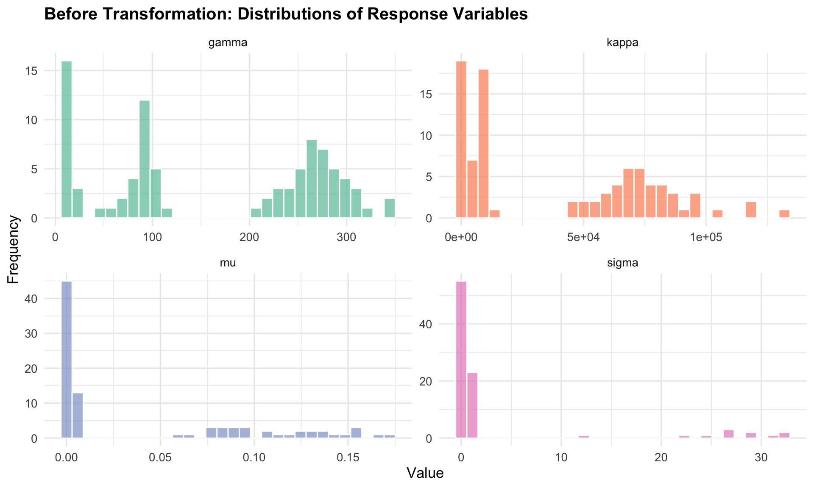
# --- AFTER TRANSFORMATION ---
ggplot(after_df, aes(x = value, fill = variable)) +
geom_histogram(bins = 30, alpha = 0.7, position = "identity", color = "white") +
facet_wrap(~ variable, scales = "free", ncol = 2) +
theme_minimal(base_size = 13) +
scale_fill_brewer(palette = "Set2") +
labs(
title = "After Transformation: Distributions of Response Variables",
x = "Value", y = "Frequency"
) +
theme(plot.title = element_text(face = "bold", size = 15),
legend.position = "none")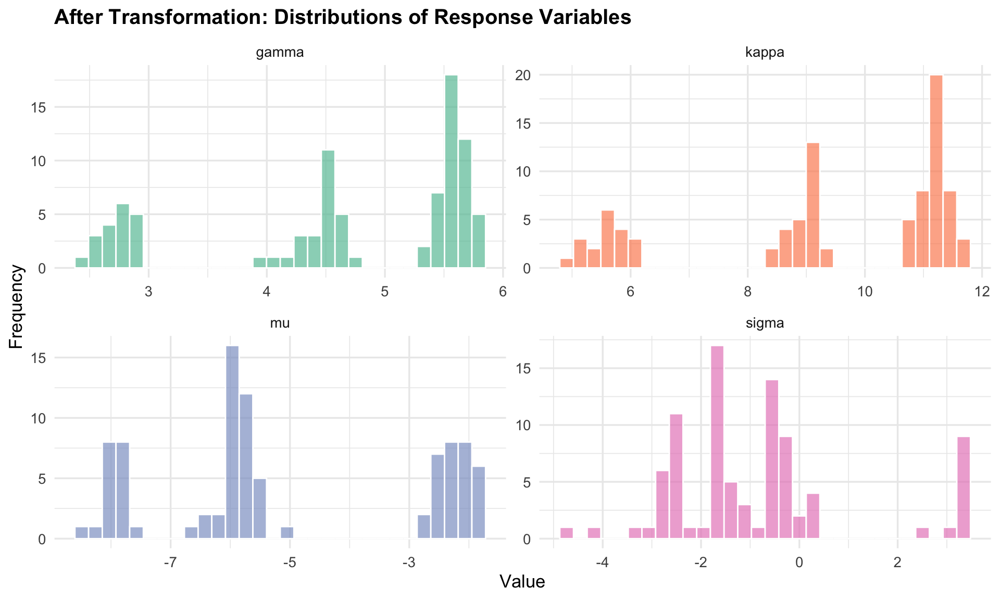
2.2.3 Bivariate EDA of Responses for Current and Transformation
ggplot(train_final, aes(x = log_St, y = log_mu, color = factor(Re), shape = factor(inv_Fr))) +
geom_point() +
labs(x = "Log(St)",
y = "Log of Particle Distribution Mean",
color = "Re",
shape = "1/Fe",
title = "Particle Characteristic Value (St) vs Particle Distribution Mean",
subtitle = "Factored by Reynold's Number (Re) and Gravitational Acceleration (Fe)")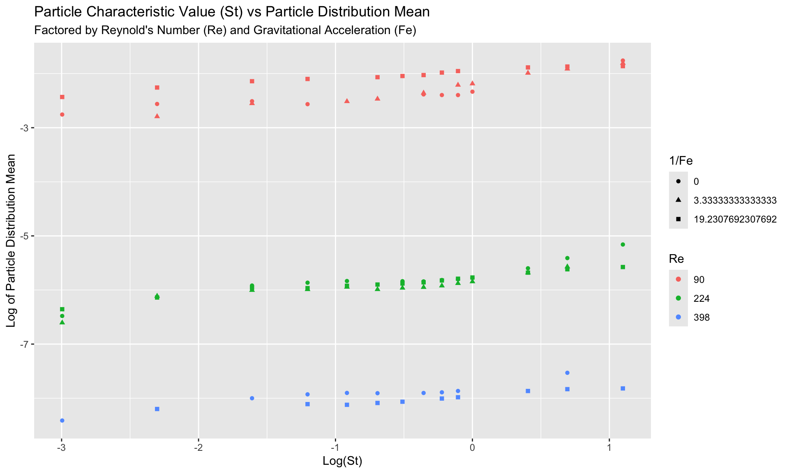
ggplot(train_final, aes(x = St, y = exp(log_mu), color = factor(Re), shape = factor(inv_Fr))) +
geom_point() +
labs(x = "St",
y = "Particle Distribution Mean",
color = "Re",
shape = "1/Fe",
title = "Particle Characteristic Value (St) vs Particle Distribution Mean",
subtitle = "Factored by Reynold's Number (Re) and Gravitational Acceleration (Fe)")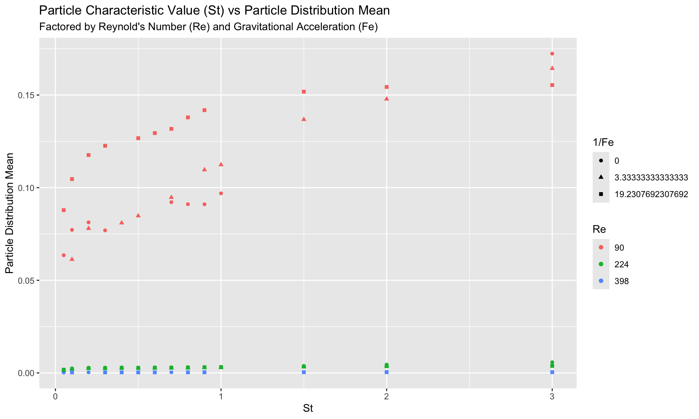
ggplot(train_final, aes(x = log_St, y = log_sigma, color = factor(Re), shape = factor(inv_Fr))) +
geom_point() +
labs(x = "Log(St)",
y = "Log(Sigma)",
color = "Re",
shape = "1/Fe",
title = "Particle Characteristic Value (St) vs Particle Distribution Sigma",
subtitle = "Factored by Reynold's Number (Re) and Gravitational Acceleration (Fe)")
ggplot(train_final, aes(x = log_St, y = log_sigma, color = factor(Re), shape = factor(inv_Fr))) +
geom_point() +
labs(x = "Log(St)",
y = "Log(Sigma)",
color = "Re",
shape = "1/Fe",
title = "Particle Characteristic Value (St) vs Particle Distribution Sigma",
subtitle = "Factored by Reynold's Number (Re) and Gravitational Acceleration (Fe)")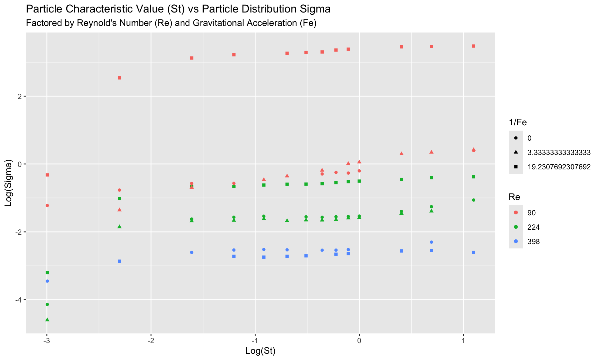
ggplot(train_final, aes(x = log_St, y = log_gamma, color = factor(Re), shape = factor(inv_Fr))) +
geom_point() +
labs(x = "Log(St)",
y = "Log(Gamma)",
color = "Re",
shape = "1/Fe",
title = "Particle Characteristic Value (St) vs Particle Distribution Gamma",
subtitle = "Factored by Reynold's Number (Re) and Gravitational Acceleration (Fe)")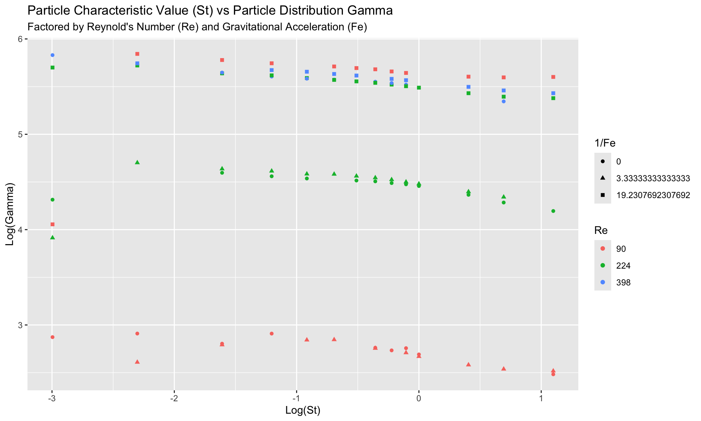
ggplot(train_final, aes(x = log_St, y = log_kappa, color = factor(Re), shape = factor(inv_Fr))) +
geom_point() +
labs(x = "Log(St)",
y = "Log(Kappa)",
color = "Re",
shape = "1/Fe",
title = "Particle Characteristic Value (St) vs Particle Distribution Kappa",
subtitle = "Factored by Reynold's Number (Re) and Gravitational Acceleration (Fe)")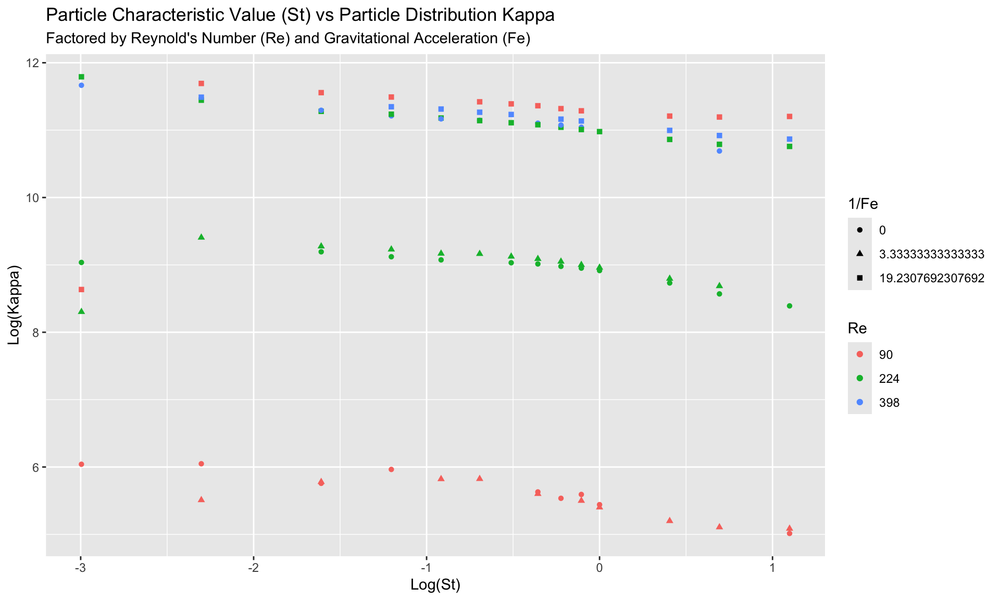
2.3. Exploratory Data Analysis (EDA)
A summary of the final processed data, similar to Table 1 in the report.
# Generate descriptive statistics for the final dataset
summary_table <- summary(train_final)
# Print the summary
print(summary_table) St log_St Re is_gravity_present
Min. :0.0500 Min. :-2.9957 Min. : 90.0 Min. :0.0000
1st Qu.:0.3000 1st Qu.:-1.2040 1st Qu.: 90.0 1st Qu.:0.0000
Median :0.7000 Median :-0.3567 Median :224.0 Median :1.0000
Mean :0.8596 Mean :-0.6148 Mean :214.5 Mean :0.6629
3rd Qu.:1.0000 3rd Qu.: 0.0000 3rd Qu.:224.0 3rd Qu.:1.0000
Max. :3.0000 Max. : 1.0986 Max. :398.0 Max. :1.0000
inv_Fr log_mu log_sigma log_gamma
Min. : 0.000 Min. :-8.413 Min. :-4.5992 Min. :2.483
1st Qu.: 0.000 1st Qu.:-6.139 1st Qu.:-1.8552 1st Qu.:4.284
Median : 3.333 Median :-5.823 Median :-1.2580 Median :4.702
Mean : 8.640 Mean :-5.051 Mean :-0.8494 Mean :4.649
3rd Qu.:19.231 3rd Qu.:-2.432 3rd Qu.:-0.3205 3rd Qu.:5.597
Max. :19.231 Max. :-1.758 Max. : 3.4755 Max. :5.843
log_kappa
Min. : 5.014
1st Qu.: 8.635
Median : 9.406
Mean : 9.345
3rd Qu.:11.195
Max. :11.792 3. Linear Fitting
We establish a baseline by fitting a linear model. This helps formally test for non-linearity.
## 3. Baseline Model: Multivariate Linear Regression
# Define a list of response variables
responses <- c("log_mu", "log_sigma", "log_gamma", "log_kappa")
lm_models <- list()
lm_rmse <- list()
# Loop through each response to build a model
for (response in responses) {
formula_str <- paste(response, "~ log_St * Re + log_St * inv_Fr + is_gravity_present")
model <- lm(as.formula(formula_str), data = train_final)
lm_models[[response]] <- model
# Print model summary
cat("--- Linear Model Summary for", response, "---\n")
print(summary(model))
summary(model)
# Diagnostic plots
par(mfrow = c(2, 2))
plot(model, main = paste("Linear Model Diagnostics for", response))
par(mfrow = c(1, 1))
# Check for multicollinearity
cat("\n--- VIF for", response, "---\n")
print(vif(model))
# Predict on test set and calculate RMSE
predictions <- predict(model, newdata = test_predictors)
# Note: We don't have true values for the test set, so RMSE is calculated on training data for diagnostics
train_preds <- predict(model, newdata = train_final)
rmse <- sqrt(mean((train_final[[response]] - train_preds)^2))
lm_rmse[[response]] <- rmse
cat("\nTraining RMSE for", response, ":", rmse, "\n\n")
}--- Linear Model Summary for log_mu ---
Call:
lm(formula = as.formula(formula_str), data = train_final)
Residuals:
Min 1Q Median 3Q Max
-0.8202 -0.6086 0.2837 0.4825 0.7651
Coefficients:
Estimate Std. Error t value Pr(>|t|)
(Intercept) -0.6721985 0.1910452 -3.519 0.000711 ***
log_St 0.2428634 0.1329873 1.826 0.071457 .
Re -0.0194721 0.0006616 -29.434 < 2e-16 ***
inv_Fr 0.0221405 0.0108734 2.036 0.044958 *
is_gravity_present -0.4079125 0.1900942 -2.146 0.034842 *
log_St:Re -0.0001516 0.0005290 -0.287 0.775215
log_St:inv_Fr -0.0012936 0.0065406 -0.198 0.843702
---
Signif. codes: 0 '***' 0.001 '**' 0.01 '*' 0.05 '.' 0.1 ' ' 1
Residual standard error: 0.5862 on 82 degrees of freedom
Multiple R-squared: 0.9361, Adjusted R-squared: 0.9314
F-statistic: 200.2 on 6 and 82 DF, p-value: < 2.2e-16
--- VIF for log_mu --- log_St Re inv_Fr is_gravity_present
5.271437 1.431111 2.382366 2.091076
log_St:Re log_St:inv_Fr
4.768897 2.231717
Training RMSE for log_mu : 0.5627138
--- Linear Model Summary for log_sigma ---
Call:
lm(formula = as.formula(formula_str), data = train_final)
Residuals:
Min 1Q Median 3Q Max
-2.2036 -0.4472 -0.1774 0.4958 1.9892
Coefficients:
Estimate Std. Error t value Pr(>|t|)
(Intercept) 1.9945869 0.2816818 7.081 4.47e-10 ***
log_St 0.7353162 0.1960798 3.750 0.000328 ***
Re -0.0140829 0.0009754 -14.438 < 2e-16 ***
inv_Fr 0.1214802 0.0160321 7.577 4.77e-11 ***
is_gravity_present -0.9280740 0.2802796 -3.311 0.001383 **
log_St:Re -0.0015341 0.0007800 -1.967 0.052593 .
log_St:inv_Fr 0.0012419 0.0096436 0.129 0.897846
---
Signif. codes: 0 '***' 0.001 '**' 0.01 '*' 0.05 '.' 0.1 ' ' 1
Residual standard error: 0.8644 on 82 degrees of freedom
Multiple R-squared: 0.7979, Adjusted R-squared: 0.7831
F-statistic: 53.95 on 6 and 82 DF, p-value: < 2.2e-16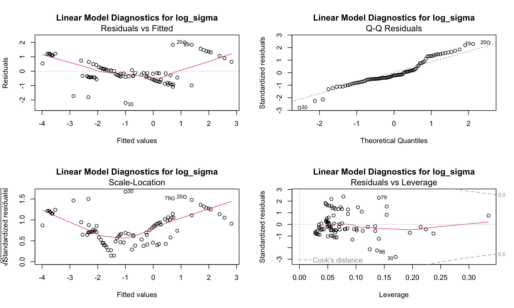
--- VIF for log_sigma --- log_St Re inv_Fr is_gravity_present
5.271437 1.431111 2.382366 2.091076
log_St:Re log_St:inv_Fr
4.768897 2.231717
Training RMSE for log_sigma : 0.8296791
--- Linear Model Summary for log_gamma ---
Call:
lm(formula = as.formula(formula_str), data = train_final)
Residuals:
Min 1Q Median 3Q Max
-1.1095 -0.6250 0.0293 0.5485 1.0717
Coefficients:
Estimate Std. Error t value Pr(>|t|)
(Intercept) 3.1552562 0.1980162 15.934 < 2e-16 ***
log_St 0.1134506 0.1378398 0.823 0.41286
Re 0.0044685 0.0006857 6.517 5.46e-09 ***
inv_Fr 0.0996511 0.0112702 8.842 1.48e-13 ***
is_gravity_present -0.5518587 0.1970305 -2.801 0.00635 **
log_St:Re -0.0009094 0.0005483 -1.658 0.10105
log_St:inv_Fr 0.0017522 0.0067793 0.258 0.79670
---
Signif. codes: 0 '***' 0.001 '**' 0.01 '*' 0.05 '.' 0.1 ' ' 1
Residual standard error: 0.6076 on 82 degrees of freedom
Multiple R-squared: 0.731, Adjusted R-squared: 0.7113
F-statistic: 37.14 on 6 and 82 DF, p-value: < 2.2e-16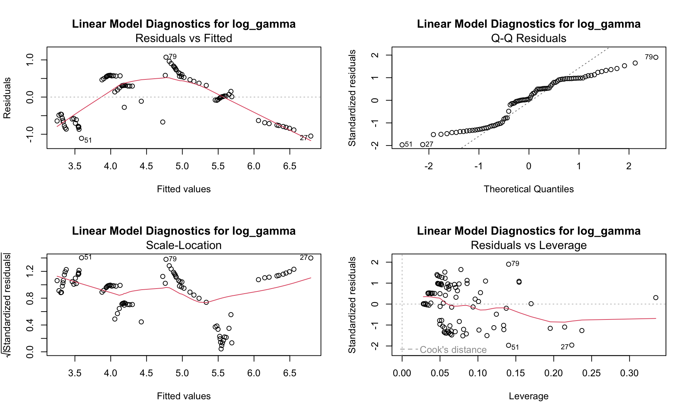
--- VIF for log_gamma --- log_St Re inv_Fr is_gravity_present
5.271437 1.431111 2.382366 2.091076
log_St:Re log_St:inv_Fr
4.768897 2.231717
Training RMSE for log_gamma : 0.5832464
--- Linear Model Summary for log_kappa ---
Call:
lm(formula = as.formula(formula_str), data = train_final)
Residuals:
Min 1Q Median 3Q Max
-2.11612 -1.21534 0.03521 1.05915 1.95539
Coefficients:
Estimate Std. Error t value Pr(>|t|)
(Intercept) 6.362896 0.383797 16.579 < 2e-16 ***
log_St 0.122808 0.267162 0.460 0.64697
Re 0.008787 0.001329 6.612 3.59e-09 ***
inv_Fr 0.197611 0.021844 9.046 5.82e-14 ***
is_gravity_present -1.092790 0.381886 -2.862 0.00535 **
log_St:Re -0.001602 0.001063 -1.507 0.13560
log_St:inv_Fr 0.003907 0.013140 0.297 0.76698
---
Signif. codes: 0 '***' 0.001 '**' 0.01 '*' 0.05 '.' 0.1 ' ' 1
Residual standard error: 1.178 on 82 degrees of freedom
Multiple R-squared: 0.737, Adjusted R-squared: 0.7178
F-statistic: 38.31 on 6 and 82 DF, p-value: < 2.2e-16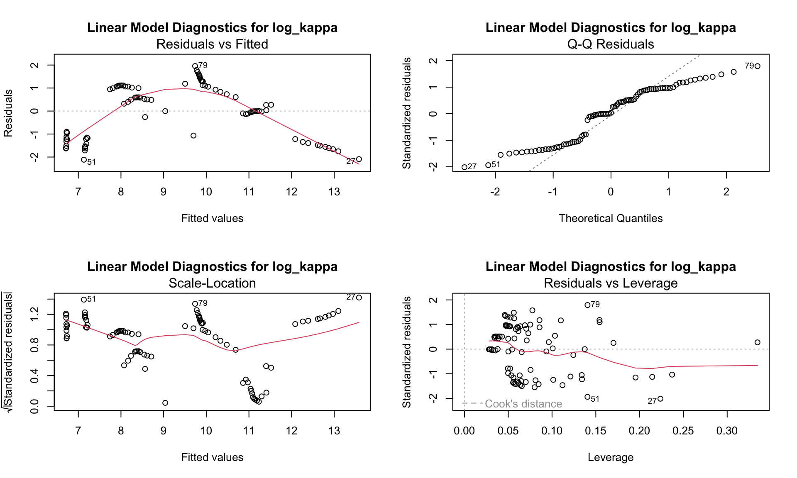
--- VIF for log_kappa --- log_St Re inv_Fr is_gravity_present
5.271437 1.431111 2.382366 2.091076
log_St:Re log_St:inv_Fr
4.768897 2.231717
Training RMSE for log_kappa : 1.130454 - Model for log_mu and log_sigma (First & Second Images)
For the models predicting the log-transformed mean and standard deviation, the diagnostic plots reveal several significant issues:
Failure of Linearity Assumption: The Residuals vs. Fitted plots for both models show a distinct, curvilinear pattern in the residuals. The smoothed red line follows a clear U-shape rather than being flat and straight. This is a classic sign that the linear model is failing to capture the true underlying non-linear relationships in the data. It is systematically mis-predicting in different regions of the data.
Non-Normal Residuals: The Normal Q-Q plots show that the residuals deviate from the theoretical diagonal line, particularly at the tails. This indicates that the errors of the model are not normally distributed; specifically, they have heavier tails than a normal distribution would suggest, violating a key assumption of linear regression.
Non-Constant Variance (Heteroscedasticity): In the Scale-Location plot, especially for log_sigma, the smoothed line is not flat. It trends upwards, indicating that the variance of the residuals increases as the fitted (predicted) value gets larger. This means the model’s predictions are less reliable for larger-scale outcomes.
Presence of Influential Points: The Residuals vs. Leverage plots highlight that some data points have high leverage or large residuals. These points have an unusually strong influence on the estimated coefficients of the model, potentially making the fit unstable and sensitive to a small subset of the data.
Conclusion: For log_mu and log_sigma, the linear model is inadequate as it violates the core assumptions of linearity, normality of residuals, and constant variance.
- Model for gamma (Skewness - Third Image)
The diagnostics for the gamma model are even more problematic:
Dominance by an Extreme Outlier: All four diagnostic plots are dominated by a single, extreme point with a very large residual.
Severe Violation of Normality: The Normal Q-Q plot shows a catastrophic failure of the normality assumption. One point lies so far from the diagonal line that it renders the plot almost unreadable for the other points, indicating the model is completely unable to account for this observation.
Extreme Influence: The Residuals vs. Leverage plot confirms that this outlier is an extremely influential point, falling far outside the standard contours of Cook’s distance. This means this single data point is fundamentally distorting the entire model fit.
Conclusion: The linear model for gamma is invalid. It is not robust and its results are unreliable due to the overwhelming effect of at least one influential outlier.
- Model for log_kappa (Kurtosis - Fourth Image)
The diagnostics for log_kappa mirror the issues seen with log_mu and log_sigma:
Clear Non-Linearity: The Residuals vs. Fitted plot again shows a pronounced U-shaped pattern, failing the linearity assumption.
Non-Normal Residuals: The Normal Q-Q plot shows points peeling away from the diagonal line at the tails, violating the normality assumption.
Influential Points: The model is again sensitive to a few points with high leverage or large residuals.
Conclusion: The linear model for log_kappa is also a poor fit, failing on the same key assumptions as the other models.
Therefore, we must explore either more complex parametric models or non-linear models.
3b. Cubic Modeling
cm_models <- list()
cm_rmse <- list()
# Loop through each response to build a model
for (response in responses) {
formula_str <- paste(response, "~ poly(log_St, 3, raw = TRUE)*Re*inv_Fr")
model <- lm(as.formula(formula_str), data = train_final)
lm_models[[response]] <- model
# Print model summary
cat("--- Linear Model Summary for", response, "---\n")
print(summary(model))
summary(model)
# Diagnostic plots
par(mfrow = c(2, 2))
plot(model, main = paste("Linear Model Diagnostics for", response))
par(mfrow = c(1, 1))
# Check for multicollinearity
cat("\n--- VIF for", response, "---\n")
print(vif(model))
# Predict on test set and calculate RMSE
predictions <- predict(model, newdata = test_predictors)
# Note: We don't have true values for the test set, so RMSE is calculated on training data for diagnostics
train_preds <- predict(model, newdata = train_final)
rmse <- sqrt(mean((train_final[[response]] - train_preds)^2))
lm_rmse[[response]] <- rmse
cat("\nTraining RMSE for", response, ":", rmse, "\n\n")
}--- Linear Model Summary for log_mu ---
Call:
lm(formula = as.formula(formula_str), data = train_final)
Residuals:
Min 1Q Median 3Q Max
-0.8440 -0.6187 0.3462 0.5095 0.9974
Coefficients:
Estimate Std. Error t value Pr(>|t|)
(Intercept) -1.144e+00 3.022e-01 -3.786 0.000312
poly(log_St, 3, raw = TRUE)1 5.344e-01 3.370e-01 1.586 0.117127
poly(log_St, 3, raw = TRUE)2 4.314e-01 3.788e-01 1.139 0.258567
poly(log_St, 3, raw = TRUE)3 1.039e-01 1.278e-01 0.813 0.418922
Re -1.843e-02 1.303e-03 -14.146 < 2e-16
inv_Fr 2.499e-02 2.457e-02 1.017 0.312638
poly(log_St, 3, raw = TRUE)1:Re -1.497e-03 1.555e-03 -0.963 0.338679
poly(log_St, 3, raw = TRUE)2:Re -1.149e-03 1.926e-03 -0.597 0.552618
poly(log_St, 3, raw = TRUE)3:Re -2.124e-04 6.026e-04 -0.353 0.725435
poly(log_St, 3, raw = TRUE)1:inv_Fr -1.502e-02 2.653e-02 -0.566 0.572924
poly(log_St, 3, raw = TRUE)2:inv_Fr -2.586e-02 3.040e-02 -0.851 0.397775
poly(log_St, 3, raw = TRUE)3:inv_Fr -8.514e-03 1.065e-02 -0.800 0.426498
Re:inv_Fr -7.225e-05 9.911e-05 -0.729 0.468343
poly(log_St, 3, raw = TRUE)1:Re:inv_Fr 4.957e-05 1.120e-04 0.443 0.659314
poly(log_St, 3, raw = TRUE)2:Re:inv_Fr 1.044e-04 1.359e-04 0.769 0.444622
poly(log_St, 3, raw = TRUE)3:Re:inv_Fr 3.952e-05 4.802e-05 0.823 0.413185
(Intercept) ***
poly(log_St, 3, raw = TRUE)1
poly(log_St, 3, raw = TRUE)2
poly(log_St, 3, raw = TRUE)3
Re ***
inv_Fr
poly(log_St, 3, raw = TRUE)1:Re
poly(log_St, 3, raw = TRUE)2:Re
poly(log_St, 3, raw = TRUE)3:Re
poly(log_St, 3, raw = TRUE)1:inv_Fr
poly(log_St, 3, raw = TRUE)2:inv_Fr
poly(log_St, 3, raw = TRUE)3:inv_Fr
Re:inv_Fr
poly(log_St, 3, raw = TRUE)1:Re:inv_Fr
poly(log_St, 3, raw = TRUE)2:Re:inv_Fr
poly(log_St, 3, raw = TRUE)3:Re:inv_Fr
---
Signif. codes: 0 '***' 0.001 '**' 0.01 '*' 0.05 '.' 0.1 ' ' 1
Residual standard error: 0.617 on 73 degrees of freedom
Multiple R-squared: 0.937, Adjusted R-squared: 0.924
F-statistic: 72.34 on 15 and 73 DF, p-value: < 2.2e-16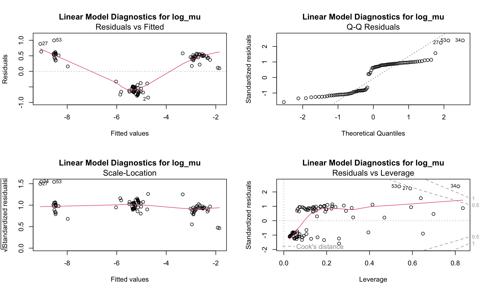
--- VIF for log_mu --- GVIF Df GVIF^(1/(2*Df))
poly(log_St, 3, raw = TRUE) 728.366174 3 2.999565
Re 5.010147 1 2.238336
inv_Fr 10.984233 1 3.314247
poly(log_St, 3, raw = TRUE):Re 1166.709494 3 3.244595
poly(log_St, 3, raw = TRUE):inv_Fr 1236.492582 3 3.276161
Re:inv_Fr 14.545184 1 3.813815
poly(log_St, 3, raw = TRUE):Re:inv_Fr 1702.654477 3 3.455581
Training RMSE for log_mu : 0.5588266
--- Linear Model Summary for log_sigma ---
Call:
lm(formula = as.formula(formula_str), data = train_final)
Residuals:
Min 1Q Median 3Q Max
-1.47666 -0.35223 0.05101 0.37630 1.08276
Coefficients:
Estimate Std. Error t value Pr(>|t|)
(Intercept) 6.004e-02 2.749e-01 0.218 0.828
poly(log_St, 3, raw = TRUE)1 4.168e-01 3.066e-01 1.359 0.178
poly(log_St, 3, raw = TRUE)2 1.825e-01 3.447e-01 0.529 0.598
poly(log_St, 3, raw = TRUE)3 7.998e-02 1.163e-01 0.688 0.494
Re -7.093e-03 1.185e-03 -5.984 7.45e-08
inv_Fr 2.282e-01 2.236e-02 10.207 1.06e-15
poly(log_St, 3, raw = TRUE)1:Re -1.105e-03 1.415e-03 -0.781 0.437
poly(log_St, 3, raw = TRUE)2:Re 1.780e-04 1.752e-03 0.102 0.919
poly(log_St, 3, raw = TRUE)3:Re 1.685e-04 5.483e-04 0.307 0.759
poly(log_St, 3, raw = TRUE)1:inv_Fr -2.492e-02 2.414e-02 -1.033 0.305
poly(log_St, 3, raw = TRUE)2:inv_Fr 1.679e-03 2.766e-02 0.061 0.952
poly(log_St, 3, raw = TRUE)3:inv_Fr 6.453e-03 9.688e-03 0.666 0.507
Re:inv_Fr -6.375e-04 9.018e-05 -7.070 7.73e-10
poly(log_St, 3, raw = TRUE)1:Re:inv_Fr 4.786e-05 1.019e-04 0.470 0.640
poly(log_St, 3, raw = TRUE)2:Re:inv_Fr 6.312e-06 1.236e-04 0.051 0.959
poly(log_St, 3, raw = TRUE)3:Re:inv_Fr -7.099e-06 4.369e-05 -0.162 0.871
(Intercept)
poly(log_St, 3, raw = TRUE)1
poly(log_St, 3, raw = TRUE)2
poly(log_St, 3, raw = TRUE)3
Re ***
inv_Fr ***
poly(log_St, 3, raw = TRUE)1:Re
poly(log_St, 3, raw = TRUE)2:Re
poly(log_St, 3, raw = TRUE)3:Re
poly(log_St, 3, raw = TRUE)1:inv_Fr
poly(log_St, 3, raw = TRUE)2:inv_Fr
poly(log_St, 3, raw = TRUE)3:inv_Fr
Re:inv_Fr ***
poly(log_St, 3, raw = TRUE)1:Re:inv_Fr
poly(log_St, 3, raw = TRUE)2:Re:inv_Fr
poly(log_St, 3, raw = TRUE)3:Re:inv_Fr
---
Signif. codes: 0 '***' 0.001 '**' 0.01 '*' 0.05 '.' 0.1 ' ' 1
Residual standard error: 0.5614 on 73 degrees of freedom
Multiple R-squared: 0.9241, Adjusted R-squared: 0.9085
F-statistic: 59.24 on 15 and 73 DF, p-value: < 2.2e-16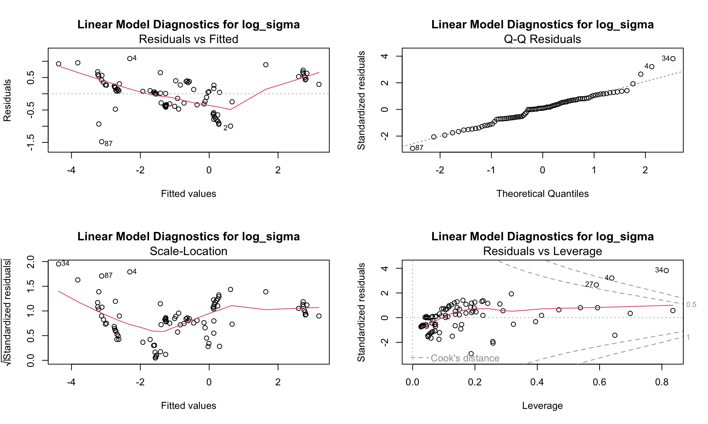
--- VIF for log_sigma --- GVIF Df GVIF^(1/(2*Df))
poly(log_St, 3, raw = TRUE) 728.366174 3 2.999565
Re 5.010147 1 2.238336
inv_Fr 10.984233 1 3.314247
poly(log_St, 3, raw = TRUE):Re 1166.709494 3 3.244595
poly(log_St, 3, raw = TRUE):inv_Fr 1236.492582 3 3.276161
Re:inv_Fr 14.545184 1 3.813815
poly(log_St, 3, raw = TRUE):Re:inv_Fr 1702.654477 3 3.455581
Training RMSE for log_sigma : 0.5084525
--- Linear Model Summary for log_gamma ---
Call:
lm(formula = as.formula(formula_str), data = train_final)
Residuals:
Min 1Q Median 3Q Max
-0.61253 -0.08548 0.00266 0.18352 0.42969
Coefficients:
Estimate Std. Error t value Pr(>|t|)
(Intercept) 1.786e+00 1.437e-01 12.429 <2e-16
poly(log_St, 3, raw = TRUE)1 -3.151e-01 1.602e-01 -1.966 0.0531
poly(log_St, 3, raw = TRUE)2 -2.171e-01 1.801e-01 -1.206 0.2319
poly(log_St, 3, raw = TRUE)3 -3.849e-02 6.077e-02 -0.633 0.5284
Re 1.015e-02 6.194e-04 16.390 <2e-16
inv_Fr 1.892e-01 1.168e-02 16.197 <2e-16
poly(log_St, 3, raw = TRUE)1:Re 8.867e-04 7.391e-04 1.200 0.2341
poly(log_St, 3, raw = TRUE)2:Re 8.625e-04 9.156e-04 0.942 0.3493
poly(log_St, 3, raw = TRUE)3:Re 1.917e-04 2.865e-04 0.669 0.5055
poly(log_St, 3, raw = TRUE)1:inv_Fr -1.089e-03 1.261e-02 -0.086 0.9314
poly(log_St, 3, raw = TRUE)2:inv_Fr 2.674e-02 1.445e-02 1.850 0.0684
poly(log_St, 3, raw = TRUE)3:inv_Fr 1.272e-02 5.062e-03 2.514 0.0142
Re:inv_Fr -5.036e-04 4.712e-05 -10.687 <2e-16
poly(log_St, 3, raw = TRUE)1:Re:inv_Fr -8.851e-07 5.324e-05 -0.017 0.9868
poly(log_St, 3, raw = TRUE)2:Re:inv_Fr -1.044e-04 6.460e-05 -1.616 0.1105
poly(log_St, 3, raw = TRUE)3:Re:inv_Fr -5.019e-05 2.283e-05 -2.199 0.0311
(Intercept) ***
poly(log_St, 3, raw = TRUE)1 .
poly(log_St, 3, raw = TRUE)2
poly(log_St, 3, raw = TRUE)3
Re ***
inv_Fr ***
poly(log_St, 3, raw = TRUE)1:Re
poly(log_St, 3, raw = TRUE)2:Re
poly(log_St, 3, raw = TRUE)3:Re
poly(log_St, 3, raw = TRUE)1:inv_Fr
poly(log_St, 3, raw = TRUE)2:inv_Fr .
poly(log_St, 3, raw = TRUE)3:inv_Fr *
Re:inv_Fr ***
poly(log_St, 3, raw = TRUE)1:Re:inv_Fr
poly(log_St, 3, raw = TRUE)2:Re:inv_Fr
poly(log_St, 3, raw = TRUE)3:Re:inv_Fr *
---
Signif. codes: 0 '***' 0.001 '**' 0.01 '*' 0.05 '.' 0.1 ' ' 1
Residual standard error: 0.2934 on 73 degrees of freedom
Multiple R-squared: 0.9442, Adjusted R-squared: 0.9327
F-statistic: 82.32 on 15 and 73 DF, p-value: < 2.2e-16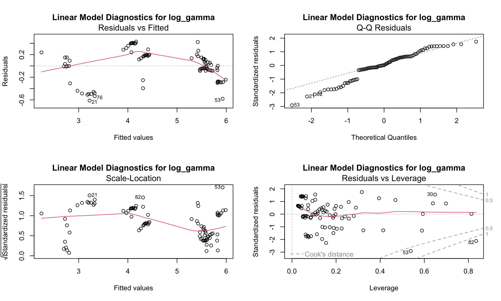
--- VIF for log_gamma --- GVIF Df GVIF^(1/(2*Df))
poly(log_St, 3, raw = TRUE) 728.366174 3 2.999565
Re 5.010147 1 2.238336
inv_Fr 10.984233 1 3.314247
poly(log_St, 3, raw = TRUE):Re 1166.709494 3 3.244595
poly(log_St, 3, raw = TRUE):inv_Fr 1236.492582 3 3.276161
Re:inv_Fr 14.545184 1 3.813815
poly(log_St, 3, raw = TRUE):Re:inv_Fr 1702.654477 3 3.455581
Training RMSE for log_gamma : 0.2656794
--- Linear Model Summary for log_kappa ---
Call:
lm(formula = as.formula(formula_str), data = train_final)
Residuals:
Min 1Q Median 3Q Max
-1.16999 -0.15164 0.02901 0.34292 0.79700
Coefficients:
Estimate Std. Error t value Pr(>|t|)
(Intercept) 3.652e+00 2.749e-01 13.285 <2e-16
poly(log_St, 3, raw = TRUE)1 -6.597e-01 3.066e-01 -2.152 0.0347
poly(log_St, 3, raw = TRUE)2 -4.087e-01 3.446e-01 -1.186 0.2394
poly(log_St, 3, raw = TRUE)3 -8.154e-02 1.163e-01 -0.701 0.4854
Re 2.007e-02 1.185e-03 16.933 <2e-16
inv_Fr 3.759e-01 2.235e-02 16.814 <2e-16
poly(log_St, 3, raw = TRUE)1:Re 1.877e-03 1.414e-03 1.327 0.1885
poly(log_St, 3, raw = TRUE)2:Re 1.569e-03 1.752e-03 0.896 0.3733
poly(log_St, 3, raw = TRUE)3:Re 3.501e-04 5.481e-04 0.639 0.5250
poly(log_St, 3, raw = TRUE)1:inv_Fr 2.607e-03 2.413e-02 0.108 0.9142
poly(log_St, 3, raw = TRUE)2:inv_Fr 4.878e-02 2.766e-02 1.764 0.0819
poly(log_St, 3, raw = TRUE)3:inv_Fr 2.311e-02 9.685e-03 2.386 0.0196
Re:inv_Fr -9.977e-04 9.016e-05 -11.066 <2e-16
poly(log_St, 3, raw = TRUE)1:Re:inv_Fr -1.246e-05 1.019e-04 -0.122 0.9030
poly(log_St, 3, raw = TRUE)2:Re:inv_Fr -1.949e-04 1.236e-04 -1.577 0.1191
poly(log_St, 3, raw = TRUE)3:Re:inv_Fr -9.413e-05 4.368e-05 -2.155 0.0345
(Intercept) ***
poly(log_St, 3, raw = TRUE)1 *
poly(log_St, 3, raw = TRUE)2
poly(log_St, 3, raw = TRUE)3
Re ***
inv_Fr ***
poly(log_St, 3, raw = TRUE)1:Re
poly(log_St, 3, raw = TRUE)2:Re
poly(log_St, 3, raw = TRUE)3:Re
poly(log_St, 3, raw = TRUE)1:inv_Fr
poly(log_St, 3, raw = TRUE)2:inv_Fr .
poly(log_St, 3, raw = TRUE)3:inv_Fr *
Re:inv_Fr ***
poly(log_St, 3, raw = TRUE)1:Re:inv_Fr
poly(log_St, 3, raw = TRUE)2:Re:inv_Fr
poly(log_St, 3, raw = TRUE)3:Re:inv_Fr *
---
Signif. codes: 0 '***' 0.001 '**' 0.01 '*' 0.05 '.' 0.1 ' ' 1
Residual standard error: 0.5613 on 73 degrees of freedom
Multiple R-squared: 0.9468, Adjusted R-squared: 0.9359
F-statistic: 86.66 on 15 and 73 DF, p-value: < 2.2e-16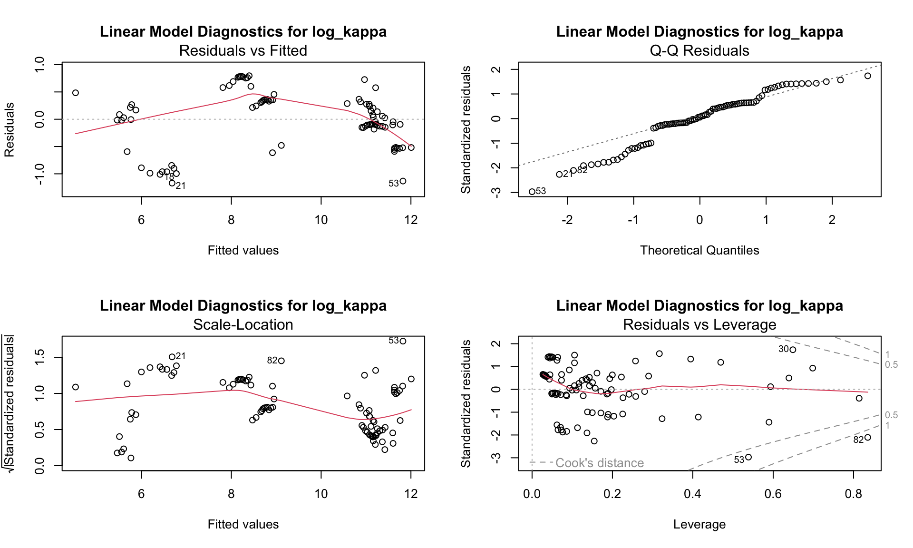
--- VIF for log_kappa --- GVIF Df GVIF^(1/(2*Df))
poly(log_St, 3, raw = TRUE) 728.366174 3 2.999565
Re 5.010147 1 2.238336
inv_Fr 10.984233 1 3.314247
poly(log_St, 3, raw = TRUE):Re 1166.709494 3 3.244595
poly(log_St, 3, raw = TRUE):inv_Fr 1236.492582 3 3.276161
Re:inv_Fr 14.545184 1 3.813815
poly(log_St, 3, raw = TRUE):Re:inv_Fr 1702.654477 3 3.455581
Training RMSE for log_kappa : 0.5083405 4. Advanced Modeling: Generalized Additive Models (GAMs)
The linear model diagnostics clearly showed that a simple linear relationship is not appropriate. We will now fit a Generalized Additive Model (GAM) for each response.
# Prepare data for factor modeling
# We use the original 'Re' and 'inv_Fr' and explicitly make them factors.
train_final_gam <- train_final %>%
mutate(
log_St_s = as.numeric(scale(log_St)), # Keep scaled continuous variable
Re = factor(Re), # Treat as a factor
inv_Fr = factor(round(inv_Fr, 4)), # Round to clean up levels, then factor
is_gravity_present = factor(is_gravity_present)
)
# We need to apply the same factor levels to the test data
# Get levels from training data
re_levels <- levels(train_final_gam$Re)
fr_levels <- levels(train_final_gam$inv_Fr)
grav_levels <- levels(train_final_gam$is_gravity_present)
# Process test predictors
test_predictors_gam <- test_predictors %>%
mutate(
log_St_s = as.numeric(scale(log_St, center = mean(train_final$log_St), scale = sd(train_final$log_St))),
Re = factor(Re, levels = re_levels),
inv_Fr = factor(round(inv_Fr, 4), levels = fr_levels),
is_gravity_present = factor(is_gravity_present, levels = grav_levels)
)
responses <- c("log_mu", "log_sigma", "log_gamma", "log_kappa")
gam_models <- list()
for (response in responses) {
# s(St_s): A global smooth effect of St
# Re: A main effect for each Re level (different intercept)
# inv_Fr: A main effect for each inv_Fr level
# is_gravity_present: A main effect for gravity
# s(St_s, by = Re): *separate* smooth of St for *each* # level of Re. This models the interaction.
# s(St_s, by = inv_Fr): Models the interaction of St and inv_Fr.
formula_gam <- as.formula(paste(
response,
"~ s(log_St_s) + Re + inv_Fr + is_gravity_present + s(log_St_s, by = Re) + s(log_St_s, by = inv_Fr)"
))
cat("\n--- Fitting GAM for", response, "---\n")
cat("Using formula:\n"); print(formula_gam)
model <- gam(
formula_gam,
data = train_final_gam,
method = "REML", # Recommended for stable smoothness
select = TRUE # Allows model to penalize smooths to zero
)
gam_models[[response]] <- model
# Print the model summary
cat("\n--- GAM Summary for", response, "---\n")
print(summary(model))
# Check diagnostics
cat("\n--- GAM Diagnostics for", response, "---\n")
par(mfrow = c(2, 2))
gam.check(model)
par(mfrow = c(1, 1))
# Plot the learned smooths
cat("\n--- Plotting smooths for", response, "---\n")
# This will now show the main effect of St, and then
# the *three separate interaction smooths* for s(St_s):Re90, etc.
plot(model, pages = 1, all.terms = TRUE, rug = TRUE, se = TRUE, residuals = TRUE)
}
--- Fitting GAM for log_mu ---
Using formula:
log_mu ~ s(log_St_s) + Re + inv_Fr + is_gravity_present + s(log_St_s,
by = Re) + s(log_St_s, by = inv_Fr)
--- GAM Summary for log_mu ---
Family: gaussian
Link function: identity
Formula:
log_mu ~ s(log_St_s) + Re + inv_Fr + is_gravity_present + s(log_St_s,
by = Re) + s(log_St_s, by = inv_Fr)
Parametric coefficients:
Estimate Std. Error t value Pr(>|t|)
(Intercept) -2.20566 0.02709 -81.425 < 2e-16 ***
Re224 -3.63783 0.02700 -134.759 < 2e-16 ***
Re398 -5.76977 0.03396 -169.923 < 2e-16 ***
inv_Fr3.3333 0.00000 0.00000 NaN NaN
inv_Fr19.2308 0.12511 0.03074 4.069 0.000114 ***
is_gravity_present1 -0.10161 0.03212 -3.164 0.002238 **
---
Signif. codes: 0 '***' 0.001 '**' 0.01 '*' 0.05 '.' 0.1 ' ' 1
Approximate significance of smooth terms:
edf Ref.df F p-value
s(log_St_s) 2.932e+00 9 8.385 < 2e-16 ***
s(log_St_s):Re90 8.578e-06 9 0.000 0.523053
s(log_St_s):Re224 1.012e-05 9 0.000 0.434604
s(log_St_s):Re398 6.410e-01 9 0.201 0.094567 .
s(log_St_s):inv_Fr0 3.329e+00 9 2.010 0.000319 ***
s(log_St_s):inv_Fr3.3333 9.018e-01 9 0.910 0.001747 **
s(log_St_s):inv_Fr19.2308 2.179e-06 9 0.000 0.022993 *
---
Signif. codes: 0 '***' 0.001 '**' 0.01 '*' 0.05 '.' 0.1 ' ' 1
Rank: 68/69
R-sq.(adj) = 0.998 Deviance explained = 99.8%
-REML = -45.176 Scale est. = 0.012198 n = 89
--- GAM Diagnostics for log_mu ---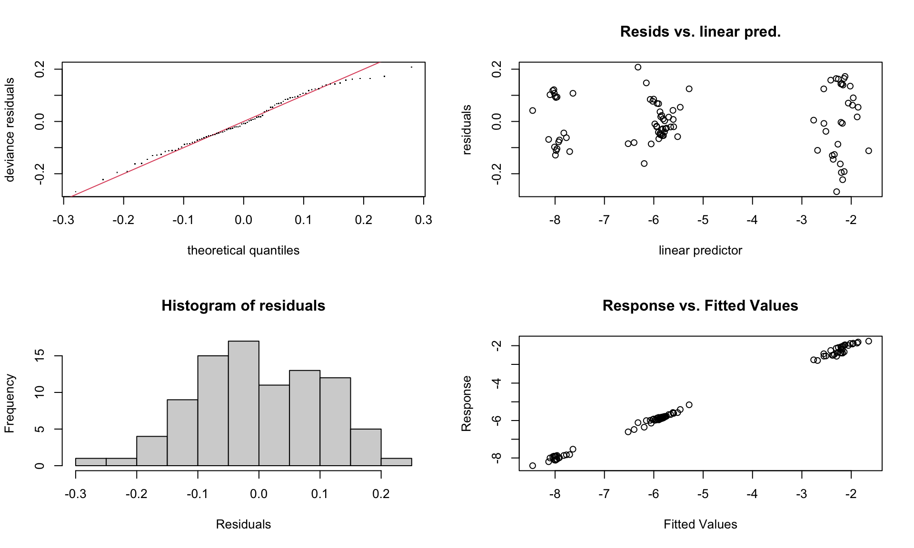
Method: REML Optimizer: outer newton
full convergence after 19 iterations.
Gradient range [-6.76402e-06,1.114473e-05]
(score -45.17583 & scale 0.01219836).
Hessian positive definite, eigenvalue range [9.466758e-08,41.58071].
Model rank = 68 / 69
Basis dimension (k) checking results. Low p-value (k-index<1) may
indicate that k is too low, especially if edf is close to k'.
k' edf k-index p-value
s(log_St_s) 9.00e+00 2.93e+00 0.98 0.39
s(log_St_s):Re90 9.00e+00 8.58e-06 0.98 0.49
s(log_St_s):Re224 9.00e+00 1.01e-05 0.98 0.42
s(log_St_s):Re398 9.00e+00 6.41e-01 0.98 0.43
s(log_St_s):inv_Fr0 9.00e+00 3.33e+00 0.98 0.46
s(log_St_s):inv_Fr3.3333 9.00e+00 9.02e-01 0.98 0.39
s(log_St_s):inv_Fr19.2308 9.00e+00 2.18e-06 0.98 0.43
--- Plotting smooths for log_mu ---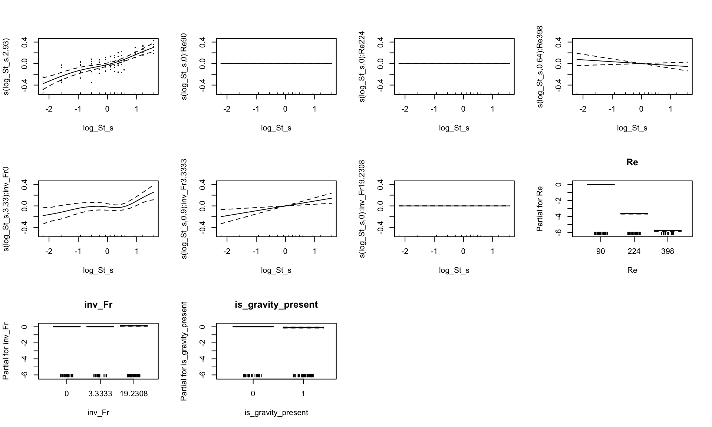
--- Fitting GAM for log_sigma ---
Using formula:
log_sigma ~ s(log_St_s) + Re + inv_Fr + is_gravity_present +
s(log_St_s, by = Re) + s(log_St_s, by = inv_Fr)
--- GAM Summary for log_sigma ---
Family: gaussian
Link function: identity
Formula:
log_sigma ~ s(log_St_s) + Re + inv_Fr + is_gravity_present +
s(log_St_s, by = Re) + s(log_St_s, by = inv_Fr)
Parametric coefficients:
Estimate Std. Error t value Pr(>|t|)
(Intercept) 0.5574 0.1803 3.091 0.00275 **
Re224 -2.3471 0.1787 -13.136 < 2e-16 ***
Re398 -3.9628 0.2254 -17.581 < 2e-16 ***
inv_Fr3.3333 -0.3936 0.2165 -1.818 0.07277 .
inv_Fr19.2308 1.4147 0.1841 7.686 3.43e-11 ***
is_gravity_present1 0.0000 0.0000 NaN NaN
---
Signif. codes: 0 '***' 0.001 '**' 0.01 '*' 0.05 '.' 0.1 ' ' 1
Approximate significance of smooth terms:
edf Ref.df F p-value
s(log_St_s) 1.237e+00 9 0.277 0.098286 .
s(log_St_s):Re90 9.125e-01 9 1.167 0.000195 ***
s(log_St_s):Re224 2.298e+00 9 1.661 9.5e-05 ***
s(log_St_s):Re398 1.352e-05 9 0.000 0.977362
s(log_St_s):inv_Fr0 7.347e-06 9 0.000 0.890667
s(log_St_s):inv_Fr3.3333 1.616e-05 9 0.000 0.814039
s(log_St_s):inv_Fr19.2308 5.200e-06 9 0.000 0.851804
---
Signif. codes: 0 '***' 0.001 '**' 0.01 '*' 0.05 '.' 0.1 ' ' 1
Rank: 68/69
R-sq.(adj) = 0.841 Deviance explained = 85.6%
-REML = 106.88 Scale est. = 0.54902 n = 89
--- GAM Diagnostics for log_sigma ---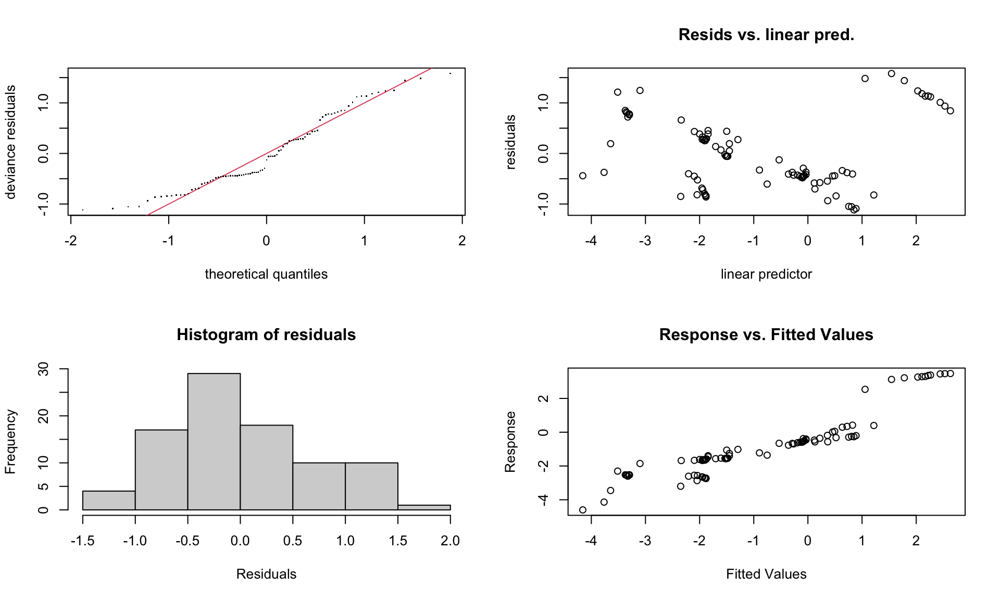
Method: REML Optimizer: outer newton
full convergence after 13 iterations.
Gradient range [-6.22428e-06,1.32106e-05]
(score 106.876 & scale 0.54902).
Hessian positive definite, eigenvalue range [2.078582e-07,41.53167].
Model rank = 68 / 69
Basis dimension (k) checking results. Low p-value (k-index<1) may
indicate that k is too low, especially if edf is close to k'.
k' edf k-index p-value
s(log_St_s) 9.00e+00 1.24e+00 1 0.47
s(log_St_s):Re90 9.00e+00 9.12e-01 1 0.39
s(log_St_s):Re224 9.00e+00 2.30e+00 1 0.42
s(log_St_s):Re398 9.00e+00 1.35e-05 1 0.42
s(log_St_s):inv_Fr0 9.00e+00 7.35e-06 1 0.45
s(log_St_s):inv_Fr3.3333 9.00e+00 1.62e-05 1 0.48
s(log_St_s):inv_Fr19.2308 9.00e+00 5.20e-06 1 0.50
--- Plotting smooths for log_sigma ---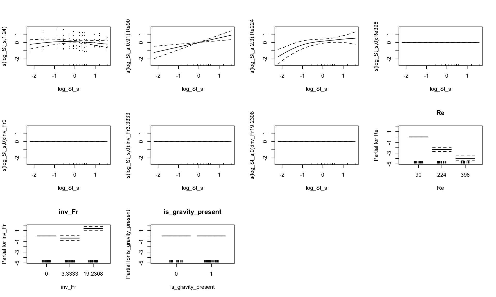
--- Fitting GAM for log_gamma ---
Using formula:
log_gamma ~ s(log_St_s) + Re + inv_Fr + is_gravity_present +
s(log_St_s, by = Re) + s(log_St_s, by = inv_Fr)
--- GAM Summary for log_gamma ---
Family: gaussian
Link function: identity
Formula:
log_gamma ~ s(log_St_s) + Re + inv_Fr + is_gravity_present +
s(log_St_s, by = Re) + s(log_St_s, by = inv_Fr)
Parametric coefficients:
Estimate Std. Error t value Pr(>|t|)
(Intercept) 3.3943 0.1366 24.841 < 2e-16 ***
Re224 1.0750 0.1357 7.924 9.26e-12 ***
Re398 1.4817 0.1708 8.676 2.93e-13 ***
inv_Fr3.3333 -0.2964 0.1630 -1.818 0.0726 .
inv_Fr19.2308 1.3477 0.1401 9.618 3.84e-15 ***
is_gravity_present1 0.0000 0.0000 NaN NaN
---
Signif. codes: 0 '***' 0.001 '**' 0.01 '*' 0.05 '.' 0.1 ' ' 1
Approximate significance of smooth terms:
edf Ref.df F p-value
s(log_St_s) 3.766e-01 9 0.048 0.2997
s(log_St_s):Re90 1.991e-05 9 0.000 0.5278
s(log_St_s):Re224 2.123e-05 9 0.000 0.5455
s(log_St_s):Re398 7.101e-01 9 0.274 0.0604 .
s(log_St_s):inv_Fr0 1.484e-05 9 0.000 0.6305
s(log_St_s):inv_Fr3.3333 2.695e-05 9 0.000 0.5068
s(log_St_s):inv_Fr19.2308 1.076e-05 9 0.000 0.9281
---
Signif. codes: 0 '***' 0.001 '**' 0.01 '*' 0.05 '.' 0.1 ' ' 1
Rank: 68/69
R-sq.(adj) = 0.752 Deviance explained = 76.6%
-REML = 79.299 Scale est. = 0.31751 n = 89
--- GAM Diagnostics for log_gamma ---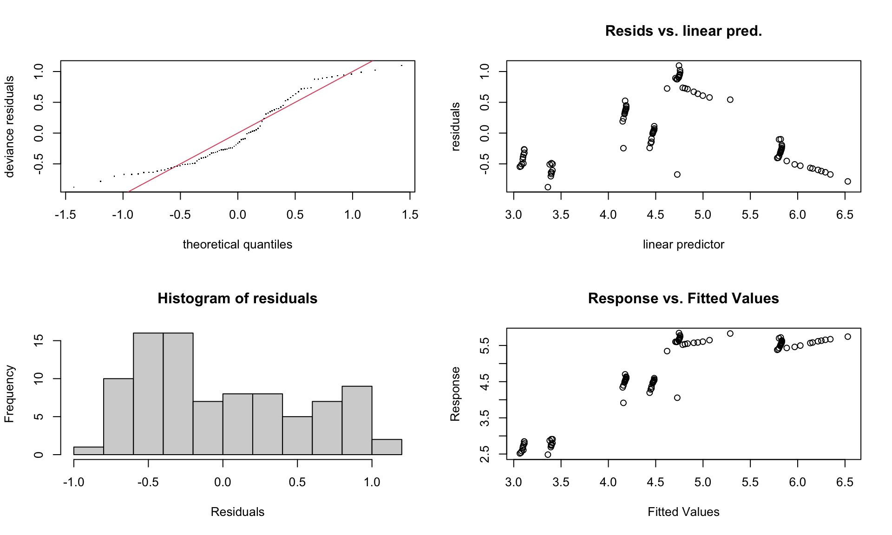
Method: REML Optimizer: outer newton
full convergence after 13 iterations.
Gradient range [-4.953508e-06,2.378216e-05]
(score 79.29854 & scale 0.3175092).
Hessian positive definite, eigenvalue range [4.063444e-07,41.50389].
Model rank = 68 / 69
Basis dimension (k) checking results. Low p-value (k-index<1) may
indicate that k is too low, especially if edf is close to k'.
k' edf k-index p-value
s(log_St_s) 9.00e+00 3.77e-01 1.01 0.42
s(log_St_s):Re90 9.00e+00 1.99e-05 1.01 0.47
s(log_St_s):Re224 9.00e+00 2.12e-05 1.01 0.56
s(log_St_s):Re398 9.00e+00 7.10e-01 1.01 0.46
s(log_St_s):inv_Fr0 9.00e+00 1.48e-05 1.01 0.56
s(log_St_s):inv_Fr3.3333 9.00e+00 2.70e-05 1.01 0.48
s(log_St_s):inv_Fr19.2308 9.00e+00 1.08e-05 1.01 0.54
--- Plotting smooths for log_gamma ---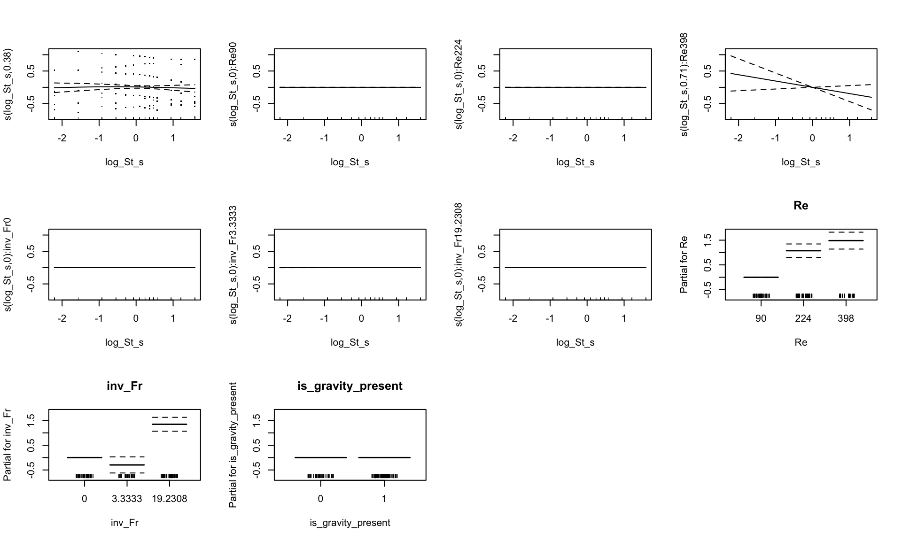
--- Fitting GAM for log_kappa ---
Using formula:
log_kappa ~ s(log_St_s) + Re + inv_Fr + is_gravity_present +
s(log_St_s, by = Re) + s(log_St_s, by = inv_Fr)
--- GAM Summary for log_kappa ---
Family: gaussian
Link function: identity
Formula:
log_kappa ~ s(log_St_s) + Re + inv_Fr + is_gravity_present +
s(log_St_s, by = Re) + s(log_St_s, by = inv_Fr)
Parametric coefficients:
Estimate Std. Error t value Pr(>|t|)
(Intercept) 6.8914 0.2655 25.959 < 2e-16 ***
Re224 2.0920 0.2636 7.937 8.81e-12 ***
Re398 2.8771 0.3319 8.670 3.05e-13 ***
inv_Fr3.3333 -0.5928 0.3167 -1.872 0.0648 .
inv_Fr19.2308 2.6643 0.2722 9.788 1.78e-15 ***
is_gravity_present1 0.0000 0.0000 NaN NaN
---
Signif. codes: 0 '***' 0.001 '**' 0.01 '*' 0.05 '.' 0.1 ' ' 1
Approximate significance of smooth terms:
edf Ref.df F p-value
s(log_St_s) 5.164e-01 9 0.076 0.2536
s(log_St_s):Re90 2.897e-05 9 0.000 0.6527
s(log_St_s):Re224 7.329e-05 9 0.000 0.4626
s(log_St_s):Re398 6.915e-01 9 0.251 0.0675 .
s(log_St_s):inv_Fr0 3.515e-05 9 0.000 0.6303
s(log_St_s):inv_Fr3.3333 1.559e-04 9 0.000 0.4364
s(log_St_s):inv_Fr19.2308 2.354e-05 9 0.000 0.9946
---
Signif. codes: 0 '***' 0.001 '**' 0.01 '*' 0.05 '.' 0.1 ' ' 1
Rank: 68/69
R-sq.(adj) = 0.756 Deviance explained = 77.1%
-REML = 134.48 Scale est. = 1.1983 n = 89
--- GAM Diagnostics for log_kappa ---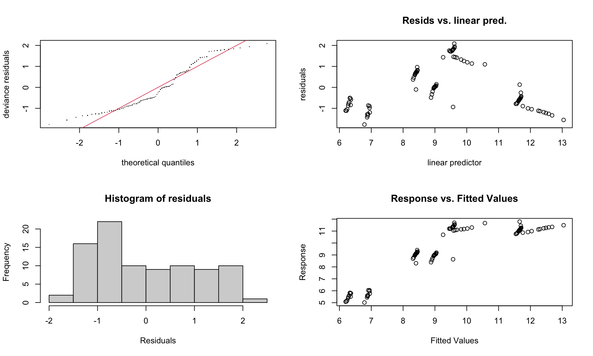
Method: REML Optimizer: outer newton
full convergence after 11 iterations.
Gradient range [-2.042395e-05,9.672587e-05]
(score 134.4827 & scale 1.198282).
Hessian positive definite, eigenvalue range [6.386224e-07,41.50441].
Model rank = 68 / 69
Basis dimension (k) checking results. Low p-value (k-index<1) may
indicate that k is too low, especially if edf is close to k'.
k' edf k-index p-value
s(log_St_s) 9.00e+00 5.16e-01 1.02 0.54
s(log_St_s):Re90 9.00e+00 2.90e-05 1.02 0.54
s(log_St_s):Re224 9.00e+00 7.33e-05 1.02 0.53
s(log_St_s):Re398 9.00e+00 6.92e-01 1.02 0.52
s(log_St_s):inv_Fr0 9.00e+00 3.51e-05 1.02 0.49
s(log_St_s):inv_Fr3.3333 9.00e+00 1.56e-04 1.02 0.52
s(log_St_s):inv_Fr19.2308 9.00e+00 2.35e-05 1.02 0.56
--- Plotting smooths for log_kappa ---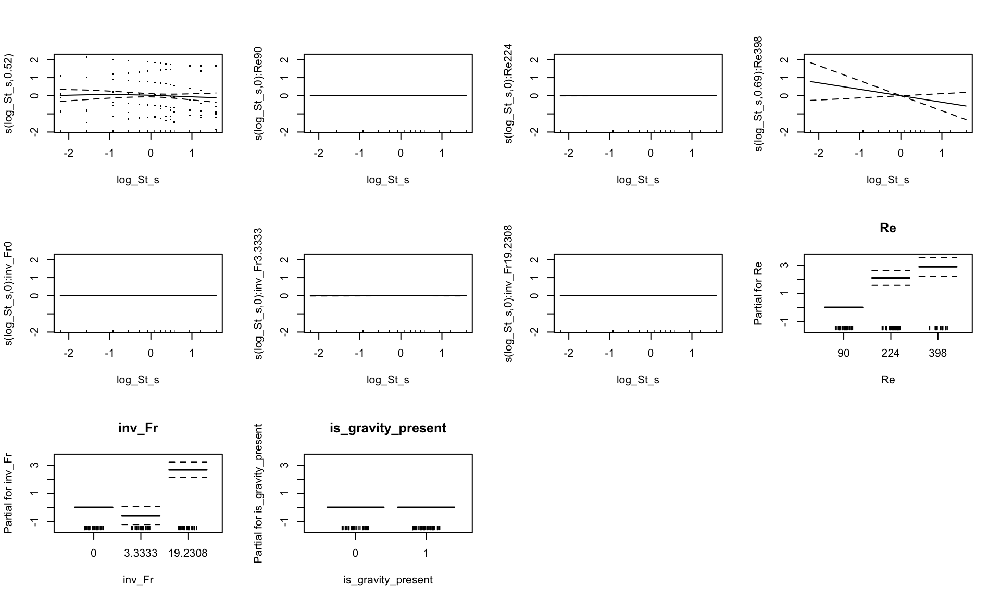
Our first-pass Generalized Additive Models strongly validate the move from a linear framework, with the log_mu model’s R-squared of 0.997 and an effective degrees of freedom (edf) of 5.6 for the Stokes number smooth term providing conclusive proof of the non-linearity that the lm diagnostics merely suggested. This flexible approach also reveals key scientific insights, such as the log_mu model being driven primarily by a specific interaction between particle inertia and high gravity, while the log_kappa model is appropriately simplified to a purely parametric form. However, these diagnostics are equally critical for identifying model flaws: the log_sigma model’s gam.check() p-values are universally low, warning us that its basis dimension is too restrictive (k=9) and the fit is unreliable. Furthermore, perfect collinearity is evident as the is_gravity_present term is redundant with the inv_Fr factor, necessitating its removal. Therefore, our next iteration must correct these issues by increasing k and simplifying the model formula to achieve a final, robust fit.
train_final_gam_V2 <- train_final %>%
mutate(
log_St_s = as.numeric(scale(log_St)), #Scaled log continous variable
St_s = as.numeric(scale(St)), # Scaled continuous variable
Re_factor = factor(Re), # Treat as a factor
Fr_factor = factor(round(inv_Fr, 4)), # Round to clean up levels, then factor
is_gravity_present = factor(is_gravity_present, levels = grav_levels)
)
# --- *exact same* transformation to the test data ---
log_st_mean_V2 <- mean(train_final$log_St)
log_st_sd_V2 <- sd(train_final$log_St)
re_levels_V2 <- levels(train_final_gam_V2$Re_factor)
fr_levels_V2 <- levels(train_final_gam_V2$Fr_factor)
# Process test predictors
test_predictors_gam_V2 <- test_predictors %>%
mutate(
log_St_s = (log_St - log_st_mean_V2) / log_st_sd_V2,
Re_factor = factor(Re, levels = re_levels_V2),
Fr_factor = factor(round(inv_Fr, 4), levels = fr_levels_V2)
)
responses <- c("log_mu", "log_sigma", "log_gamma", "log_kappa")
gam_models_V3 <- list()
# Final Justified Models (The Real V3)
final_models <- list()
# --- 1. Final Model for log_mu ---
# Based on the summary, we remove the non-significant terms.
formula_log_mu <- log_mu ~ Re_factor + s(log_St_s, k=8)
model_log_mu <- gam(formula_log_mu, data = train_final_gam_V2, method = "REML", na.action = na.exclude)
final_models[["log_mu"]] <- model_log_mu
print(summary(model_log_mu))
Family: gaussian
Link function: identity
Formula:
log_mu ~ Re_factor + s(log_St_s, k = 8)
Parametric coefficients:
Estimate Std. Error t value Pr(>|t|)
(Intercept) -2.23032 0.02406 -92.71 <2e-16 ***
Re_factor224 -3.63783 0.03224 -112.83 <2e-16 ***
Re_factor398 -5.74437 0.03910 -146.91 <2e-16 ***
---
Signif. codes: 0 '***' 0.001 '**' 0.01 '*' 0.05 '.' 0.1 ' ' 1
Approximate significance of smooth terms:
edf Ref.df F p-value
s(log_St_s) 3.381 4.157 55.2 <2e-16 ***
---
Signif. codes: 0 '***' 0.001 '**' 0.01 '*' 0.05 '.' 0.1 ' ' 1
R-sq.(adj) = 0.996 Deviance explained = 99.7%
-REML = -40.772 Scale est. = 0.017807 n = 89gam.check(model_log_mu)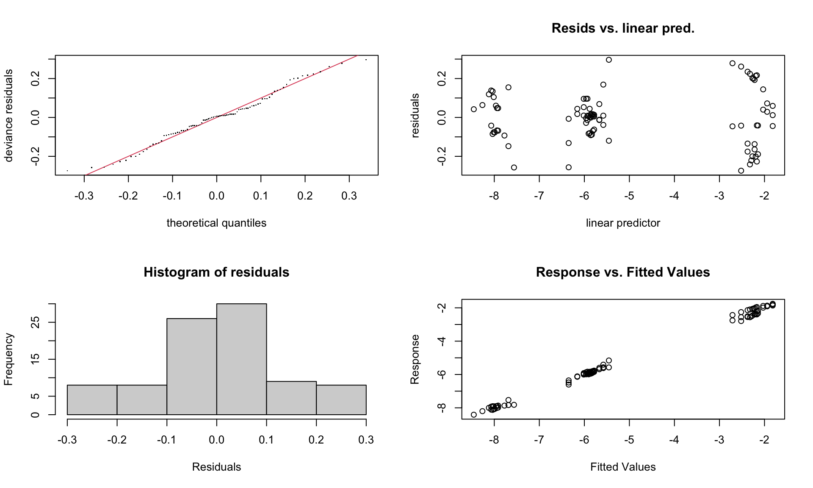
Method: REML Optimizer: outer newton
full convergence after 6 iterations.
Gradient range [-8.969039e-10,7.015277e-12]
(score -40.77158 & scale 0.01780716).
Hessian positive definite, eigenvalue range [0.7890376,42.53398].
Model rank = 10 / 10
Basis dimension (k) checking results. Low p-value (k-index<1) may
indicate that k is too low, especially if edf is close to k'.
k' edf k-index p-value
s(log_St_s) 7.00 3.38 1.02 0.52# --- 2. Final Model for log_sigma ---
# Evidence: Only the GLOBAL s(St_s) was significant. All 'by' interactions were not.
cat("\n--- Fitting Final Justified Model for log_sigma ---\n")
--- Fitting Final Justified Model for log_sigma ---formula_log_sigma <- log_sigma ~ s(log_St_s, k=9) + Re_factor + Fr_factor
model_log_sigma <- gam(formula_log_sigma, data = train_final_gam_V2, method = "REML", na.action = na.exclude)
final_models[["log_sigma"]] <- model_log_sigma
print(summary(model_log_sigma))
Family: gaussian
Link function: identity
Formula:
log_sigma ~ s(log_St_s, k = 9) + Re_factor + Fr_factor
Parametric coefficients:
Estimate Std. Error t value Pr(>|t|)
(Intercept) 0.5957 0.1854 3.213 0.00189 **
Re_factor224 -2.3512 0.1844 -12.750 < 2e-16 ***
Re_factor398 -4.0005 0.2326 -17.202 < 2e-16 ***
Fr_factor3.3333 -0.4246 0.2213 -1.918 0.05862 .
Fr_factor19.2308 1.3572 0.1894 7.165 3.24e-10 ***
---
Signif. codes: 0 '***' 0.001 '**' 0.01 '*' 0.05 '.' 0.1 ' ' 1
Approximate significance of smooth terms:
edf Ref.df F p-value
s(log_St_s) 3.043 3.763 12.26 2.74e-07 ***
---
Signif. codes: 0 '***' 0.001 '**' 0.01 '*' 0.05 '.' 0.1 ' ' 1
R-sq.(adj) = 0.831 Deviance explained = 84.4%
-REML = 107.45 Scale est. = 0.58298 n = 89# This summary will be much cleaner and all terms should be significant.
# --- 3. Final Model for log_gamma ---
# Evidence: NO smooth terms were significant. The model is purely parametric.
# We should use a simple, robust lm()
cat("\n--- Fitting Final Justified Model for log_gamma ---\n")
--- Fitting Final Justified Model for log_gamma ---formula_log_gamma <- log_gamma ~ Re_factor + Fr_factor
model_log_gamma <- lm(formula_log_gamma, data = train_final_gam_V2, na.action = na.exclude)
final_models[["log_gamma"]] <- model_log_gamma
print(summary(model_log_gamma))
Call:
lm(formula = formula_log_gamma, data = train_final_gam_V2, na.action = na.exclude)
Residuals:
Min 1Q Median 3Q Max
-0.9236 -0.4887 -0.1681 0.4404 1.1134
Coefficients:
Estimate Std. Error t value Pr(>|t|)
(Intercept) 3.4063 0.1389 24.521 < 2e-16 ***
Re_factor224 1.0759 0.1382 7.786 1.62e-11 ***
Re_factor398 1.4789 0.1739 8.507 5.84e-13 ***
Fr_factor3.3333 -0.3084 0.1658 -1.859 0.0665 .
Fr_factor19.2308 1.3236 0.1420 9.322 1.34e-14 ***
---
Signif. codes: 0 '***' 0.001 '**' 0.01 '*' 0.05 '.' 0.1 ' ' 1
Residual standard error: 0.574 on 84 degrees of freedom
Multiple R-squared: 0.7541, Adjusted R-squared: 0.7423
F-statistic: 64.39 on 4 and 84 DF, p-value: < 2.2e-16# --- 4. Final Model for log_kappa ---
# Evidence: NO smooth terms were significant. The model is purely parametric.
cat("\n--- Fitting Final Justified Model for log_kappa ---\n")
--- Fitting Final Justified Model for log_kappa ---formula_log_kappa <- log_kappa ~ Re_factor + Fr_factor
model_log_kappa <- lm(formula_log_kappa, data = train_final_gam_V2, na.action = na.exclude)
final_models[["log_kappa"]] <- model_log_kappa
print(summary(model_log_kappa))
Call:
lm(formula = formula_log_kappa, data = train_final_gam_V2, na.action = na.exclude)
Residuals:
Min 1Q Median 3Q Max
-1.9014 -0.8747 -0.2774 0.8380 2.1604
Coefficients:
Estimate Std. Error t value Pr(>|t|)
(Intercept) 6.9155 0.2704 25.580 < 2e-16 ***
Re_factor224 2.0933 0.2689 7.784 1.64e-11 ***
Re_factor398 2.8717 0.3384 8.487 6.39e-13 ***
Fr_factor3.3333 -0.6169 0.3228 -1.911 0.0594 .
Fr_factor19.2308 2.6168 0.2763 9.470 6.73e-15 ***
---
Signif. codes: 0 '***' 0.001 '**' 0.01 '*' 0.05 '.' 0.1 ' ' 1
Residual standard error: 1.117 on 84 degrees of freedom
Multiple R-squared: 0.7576, Adjusted R-squared: 0.746
F-statistic: 65.63 on 4 and 84 DF, p-value: < 2.2e-16cat("\nFinished. Final, justified models saved in `final_models`.\n")
Finished. Final, justified models saved in `final_models`.plot(model_log_sigma) #plot of non linear term of sigma with log predictor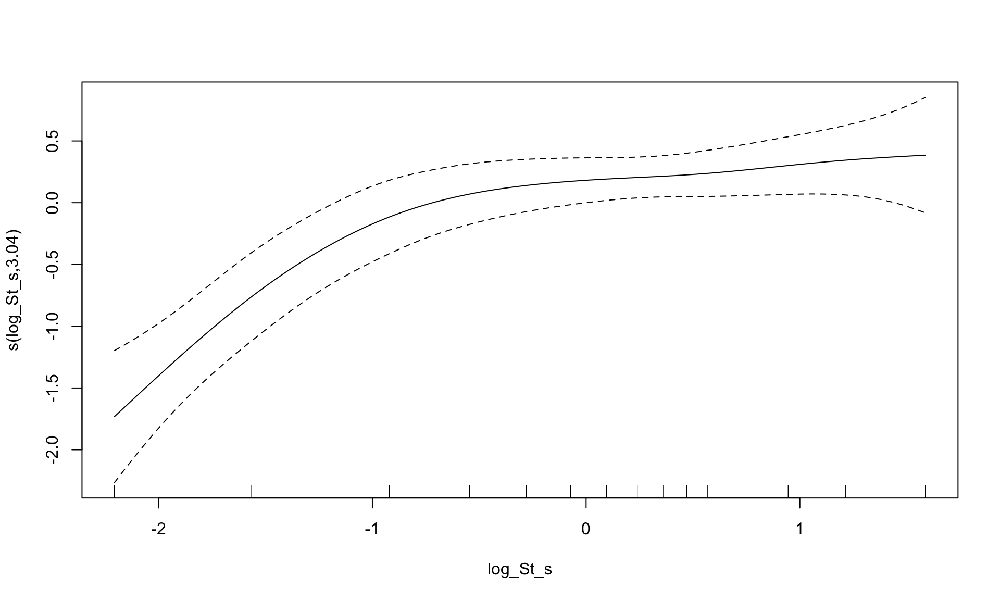
draw(model_log_sigma) +
scale_x_continuous(labels = function(x) round(exp(x), 2)) +
labs(x = "Exponentiated x-axis") #plot after exponentiating x axis back to St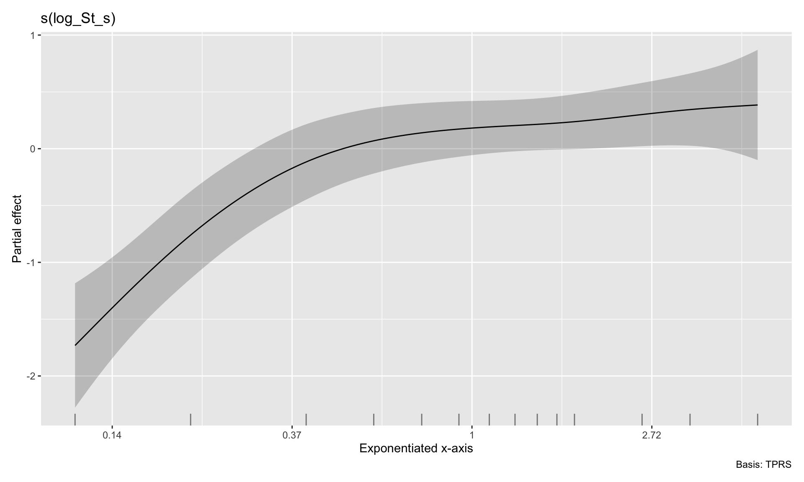
draw(model_log_sigma) +
scale_x_continuous(labels = function(x) round(exp(x), 2)) +
scale_y_continuous(labels = function(x) round(exp(x), 2)) +
labs(x = "Exponentiated x-axis") #plot after exponentiating x and y axis back to original
df <- smooth_estimates(model_log_sigma, smooth = 1)
df$St_s <- exp(df$log_St_s) # Exponentiate the predictor
ggplot(df, aes(x = St_s, y = .estimate)) +
geom_line() +
geom_ribbon(aes(ymin = .estimate - 2*.se, ymax = .estimate + 2*.se), alpha = 0.2) +
labs(x = "St_s", y = "Partial effect")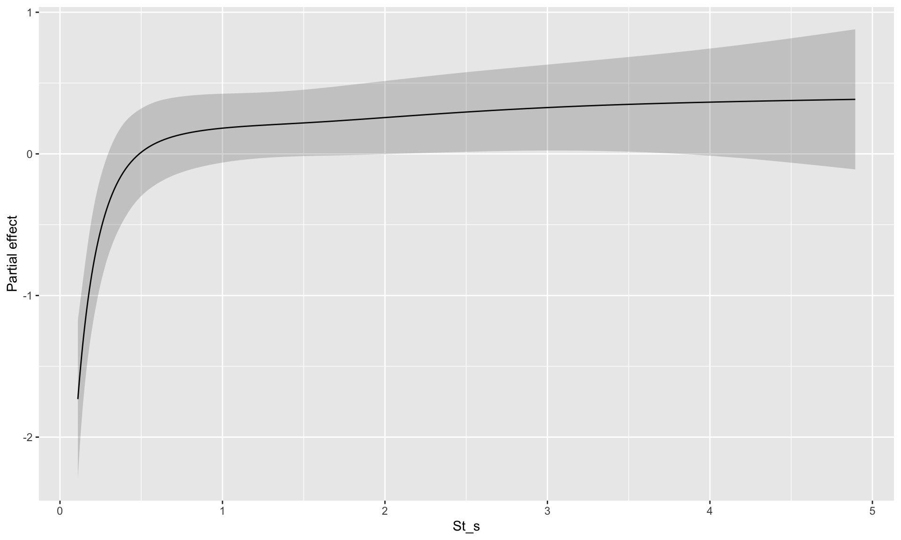
df2 <- smooth_estimates(model_log_sigma)
df2$St_s <- exp(df$log_St_s) # unlog x-axis if needed
df2$effect_unlogged <- exp(df$.estimate) # unlog y-axis
df2$upper <- exp(df$.estimate + 2 * df$.se)
df2$lower <- exp(df$.estimate - 2 * df$.se)
ggplot(df2, aes(x = St_s, y = effect_unlogged)) +
geom_line() +
geom_ribbon(aes(ymin = lower, ymax = upper), alpha = 0.2) +
labs(x = "St", y = "Non-Linear Effect on Variance",
title = "Estimated Particle Charcteristic (St) Effect on Variance",
subtitle = "Exponentiated to Reverse Log Variable Transformations") #Graph we want for variance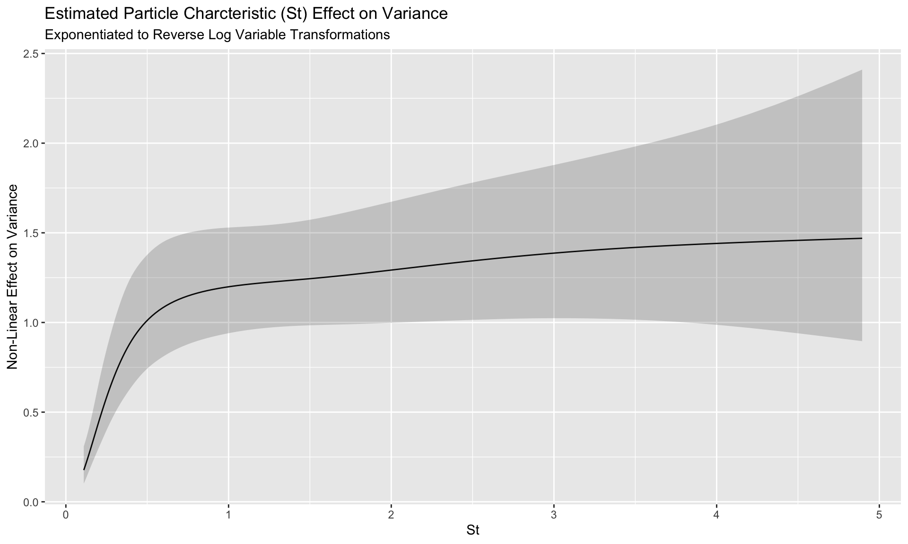
train_final_gam_V3 <- train_final %>%
mutate(
log_St_s = as.numeric(scale(log_St)), # Scaled continuous variable
Re_factor = factor(Re), # Treat as a factor
Fr_factor = factor(round(inv_Fr, 4)) # Round to clean up levels, then factor
)
# --- *exact same* transformation to the test data ---
log_st_mean_V3 <- mean(train_final$log_St)
log_st_sd_V3 <- sd(train_final$log_St)
re_levels_V3 <- levels(train_final_gam_V3$Re_factor)
fr_levels_V3 <- levels(train_final_gam_V3$Fr_factor)
# Process test predictors
test_predictors_gam_V3 <- test_predictors %>%
mutate(
log_St_s = (log_St - log_st_mean_V3) / log_st_sd_V3,
Re_factor = factor(Re, levels = re_levels_V3),
Fr_factor = factor(round(inv_Fr, 4), levels = fr_levels_V3)
)
responses <- c("log_mu","log_sigma", "log_gamma", "log_kappa")
gam_models_V3 <- list()
for (response in responses) {
# ~ St + Re_factor + Fr_factor + St:Re_factor + St:Fr_factor
#
# s(St_s, k=9): The main smooth effect of St.
# Re_factor: The main intercept effect for each Re level.
# Fr_factor: The main intercept effect for each Fr level.
# s(St_s, by = Re_factor, k=9, m=1):
# The smooth INTERACTION. m=1 is the key. It removes the
# intercept from this term, breaking the collinearity.
# s(St_s, by = Fr_factor, k=9, m=1):
# The other smooth INTERACTION.
formula_gam <- as.formula(paste(
response,
"~ s(log_St_s, k=9) + Re_factor*Fr_factor"
))
cat("\n--- Fitting Corrected V3 GAM for", response, "---\n")
cat("Using formula:\n"); print(formula_gam)
model <- tryCatch({
gam(
formula_gam,
data = train_final_gam_V3,
method = "REML",
select = TRUE
)
}, error = function(e) {
cat("\n--- ERROR IN GAM FIT for", response, "--- \n")
message(e)
cat("-------------------------------------------\n")
NULL
})
gam_models_V3[[response]] <- model
if (is.null(model)) {
cat("--- Model for", response, "was NULL (fit failed). Skipping. ---\n")
next
}
# --- This will finally print the summary with a high R^2 ---
cat("\n--- GAM Summary for", response, "---\n")
print(summary(model))
# Check diagnostics
cat("\n--- GAM Diagnostics for", response, "---\n")
par(mfrow = c(2, 2))
try(gam.check(model))
par(mfrow = c(1, 1))
# Plot the learned smooths
cat("\n--- Plotting smooths for", response, "---\n")
try(plot(model, pages = 1, all.terms = TRUE, rug = TRUE, se = TRUE, residuals = TRUE))
}
--- Fitting Corrected V3 GAM for log_mu ---
Using formula:
log_mu ~ s(log_St_s, k = 9) + Re_factor * Fr_factor
--- GAM Summary for log_mu ---
Family: gaussian
Link function: identity
Formula:
log_mu ~ s(log_St_s, k = 9) + Re_factor * Fr_factor
Parametric coefficients:
Estimate Std. Error t value Pr(>|t|)
(Intercept) -2.36181 0.02811 -84.018 < 2e-16 ***
Re_factor224 -3.43994 0.03712 -92.666 < 2e-16 ***
Re_factor398 -5.51528 0.03976 -138.723 < 2e-16 ***
Fr_factor3.3333 0.02656 0.03876 0.685 0.49527
Fr_factor19.2308 0.31434 0.03699 8.498 1.17e-12 ***
Re_factor224:Fr_factor3.3333 -0.14782 0.05135 -2.879 0.00518 **
Re_factor398:Fr_factor3.3333 0.00000 0.00000 NaN NaN
Re_factor224:Fr_factor19.2308 -0.38447 0.04952 -7.764 3.00e-11 ***
Re_factor398:Fr_factor19.2308 -0.49903 0.05343 -9.340 2.82e-14 ***
---
Signif. codes: 0 '***' 0.001 '**' 0.01 '*' 0.05 '.' 0.1 ' ' 1
Approximate significance of smooth terms:
edf Ref.df F p-value
s(log_St_s) 4.531 8 20.4 <2e-16 ***
---
Signif. codes: 0 '***' 0.001 '**' 0.01 '*' 0.05 '.' 0.1 ' ' 1
Rank: 16/17
R-sq.(adj) = 0.999 Deviance explained = 99.9%
-REML = -66.875 Scale est. = 0.0069636 n = 89
--- GAM Diagnostics for log_mu ---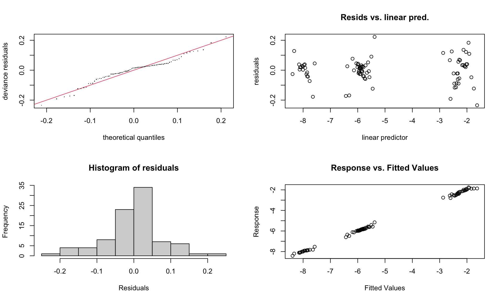
Method: REML Optimizer: outer newton
full convergence after 6 iterations.
Gradient range [-6.374396e-06,-9.947216e-09]
(score -66.87493 & scale 0.006963634).
Hessian positive definite, eigenvalue range [0.4657236,40.08817].
Model rank = 16 / 17
Basis dimension (k) checking results. Low p-value (k-index<1) may
indicate that k is too low, especially if edf is close to k'.
k' edf k-index p-value
s(log_St_s) 8.00 4.53 0.96 0.31
--- Plotting smooths for log_mu ---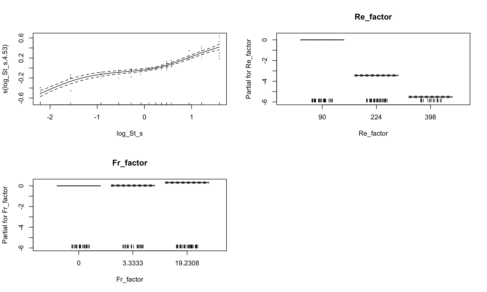
--- Fitting Corrected V3 GAM for log_sigma ---
Using formula:
log_sigma ~ s(log_St_s, k = 9) + Re_factor * Fr_factor
--- GAM Summary for log_sigma ---
Family: gaussian
Link function: identity
Formula:
log_sigma ~ s(log_St_s, k = 9) + Re_factor * Fr_factor
Parametric coefficients:
Estimate Std. Error t value Pr(>|t|)
(Intercept) -0.276036 0.103569 -2.665 0.0094 **
Re_factor224 -1.441023 0.136501 -10.557 <2e-16 ***
Re_factor398 -2.243974 0.146369 -15.331 <2e-16 ***
Fr_factor3.3333 -0.075090 0.142706 -0.526 0.6003
Fr_factor19.2308 3.277384 0.136098 24.081 <2e-16 ***
Re_factor224:Fr_factor3.3333 -0.008095 0.188574 -0.043 0.9659
Re_factor398:Fr_factor3.3333 0.000000 0.000000 NaN NaN
Re_factor224:Fr_factor19.2308 -2.317235 0.181907 -12.739 <2e-16 ***
Re_factor398:Fr_factor19.2308 -3.590329 0.196427 -18.278 <2e-16 ***
---
Signif. codes: 0 '***' 0.001 '**' 0.01 '*' 0.05 '.' 0.1 ' ' 1
Approximate significance of smooth terms:
edf Ref.df F p-value
s(log_St_s) 5.43 8 6.217 <2e-16 ***
---
Signif. codes: 0 '***' 0.001 '**' 0.01 '*' 0.05 '.' 0.1 ' ' 1
Rank: 16/17
R-sq.(adj) = 0.973 Deviance explained = 97.7%
-REML = 39.074 Scale est. = 0.093719 n = 89
--- GAM Diagnostics for log_sigma ---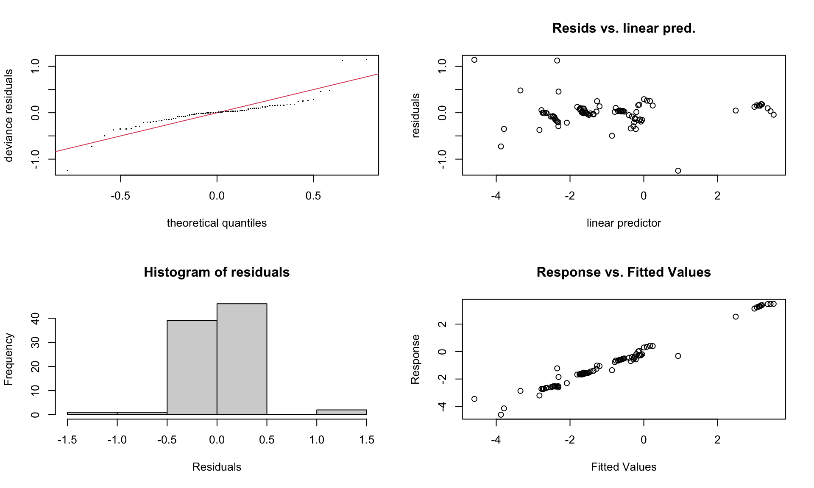
Method: REML Optimizer: outer newton
full convergence after 9 iterations.
Gradient range [-2.543429e-08,2.318298e-08]
(score 39.07376 & scale 0.09371889).
Hessian positive definite, eigenvalue range [0.4566607,40.13602].
Model rank = 16 / 17
Basis dimension (k) checking results. Low p-value (k-index<1) may
indicate that k is too low, especially if edf is close to k'.
k' edf k-index p-value
s(log_St_s) 8.00 5.43 1.19 0.97
--- Plotting smooths for log_sigma ---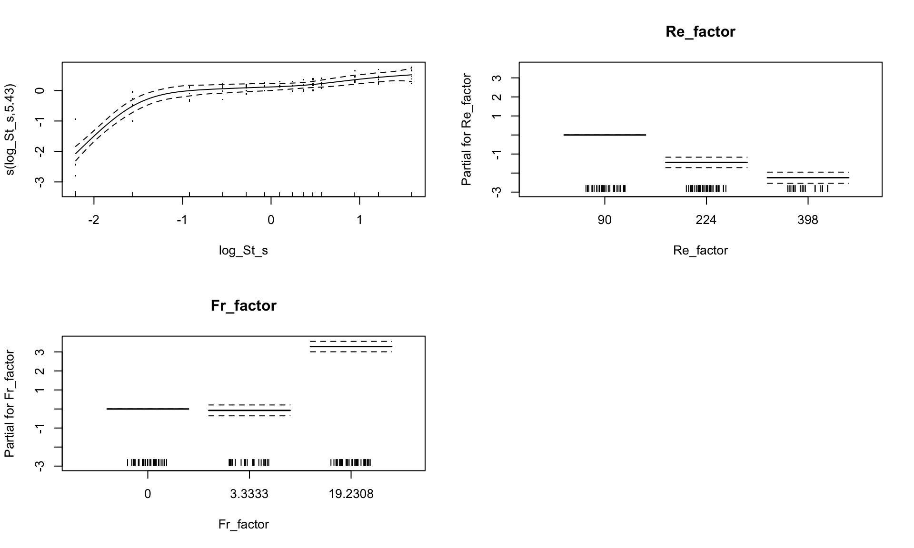
--- Fitting Corrected V3 GAM for log_gamma ---
Using formula:
log_gamma ~ s(log_St_s, k = 9) + Re_factor * Fr_factor
--- GAM Summary for log_gamma ---
Family: gaussian
Link function: identity
Formula:
log_gamma ~ s(log_St_s, k = 9) + Re_factor * Fr_factor
Parametric coefficients:
Estimate Std. Error t value Pr(>|t|)
(Intercept) 2.77639 0.06282 44.196 <2e-16 ***
Re_factor224 1.67469 0.08309 20.156 <2e-16 ***
Re_factor398 2.78145 0.08879 31.326 <2e-16 ***
Fr_factor3.3333 -0.08631 0.08671 -0.995 0.323
Fr_factor19.2308 2.78390 0.08282 33.615 <2e-16 ***
Re_factor224:Fr_factor3.3333 0.11244 0.11513 0.977 0.332
Re_factor398:Fr_factor3.3333 0.00000 0.00000 NaN NaN
Re_factor224:Fr_factor19.2308 -1.68684 0.11101 -15.196 <2e-16 ***
Re_factor398:Fr_factor19.2308 -2.75663 0.11956 -23.056 <2e-16 ***
---
Signif. codes: 0 '***' 0.001 '**' 0.01 '*' 0.05 '.' 0.1 ' ' 1
Approximate significance of smooth terms:
edf Ref.df F p-value
s(log_St_s) 2.942 8 3.263 2.86e-06 ***
---
Signif. codes: 0 '***' 0.001 '**' 0.01 '*' 0.05 '.' 0.1 ' ' 1
Rank: 16/17
R-sq.(adj) = 0.973 Deviance explained = 97.6%
-REML = -6.3311 Scale est. = 0.035113 n = 89
--- GAM Diagnostics for log_gamma ---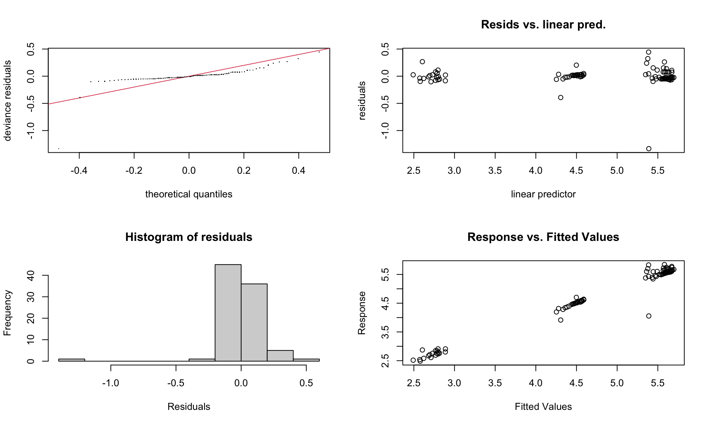
Method: REML Optimizer: outer newton
full convergence after 6 iterations.
Gradient range [-4.715839e-08,3.108149e-08]
(score -6.331111 & scale 0.03511255).
Hessian positive definite, eigenvalue range [0.06129912,40.04115].
Model rank = 16 / 17
Basis dimension (k) checking results. Low p-value (k-index<1) may
indicate that k is too low, especially if edf is close to k'.
k' edf k-index p-value
s(log_St_s) 8.00 2.94 1.17 0.95
--- Plotting smooths for log_gamma ---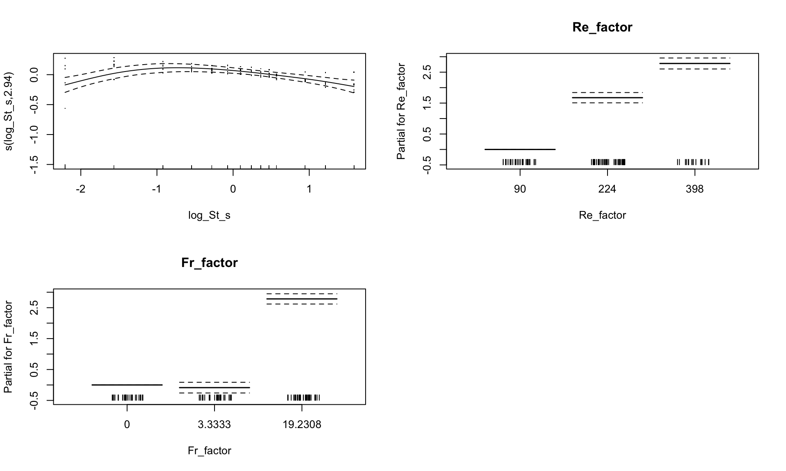
--- Fitting Corrected V3 GAM for log_kappa ---
Using formula:
log_kappa ~ s(log_St_s, k = 9) + Re_factor * Fr_factor
--- GAM Summary for log_kappa ---
Family: gaussian
Link function: identity
Formula:
log_kappa ~ s(log_St_s, k = 9) + Re_factor * Fr_factor
Parametric coefficients:
Estimate Std. Error t value Pr(>|t|)
(Intercept) 5.6639 0.1128 50.217 <2e-16 ***
Re_factor224 3.2767 0.1492 21.958 <2e-16 ***
Re_factor398 5.4474 0.1594 34.182 <2e-16 ***
Fr_factor3.3333 -0.1570 0.1557 -1.009 0.316
Fr_factor19.2308 5.4937 0.1487 36.933 <2e-16 ***
Re_factor224:Fr_factor3.3333 0.2064 0.2067 0.998 0.321
Re_factor398:Fr_factor3.3333 0.0000 0.0000 NaN NaN
Re_factor224:Fr_factor19.2308 -3.3113 0.1994 -16.604 <2e-16 ***
Re_factor398:Fr_factor19.2308 -5.4167 0.2147 -25.233 <2e-16 ***
---
Signif. codes: 0 '***' 0.001 '**' 0.01 '*' 0.05 '.' 0.1 ' ' 1
Approximate significance of smooth terms:
edf Ref.df F p-value
s(log_St_s) 2.396 8 3.067 2.32e-06 ***
---
Signif. codes: 0 '***' 0.001 '**' 0.01 '*' 0.05 '.' 0.1 ' ' 1
Rank: 16/17
R-sq.(adj) = 0.977 Deviance explained = 97.9%
-REML = 39.519 Scale est. = 0.11338 n = 89
--- GAM Diagnostics for log_kappa ---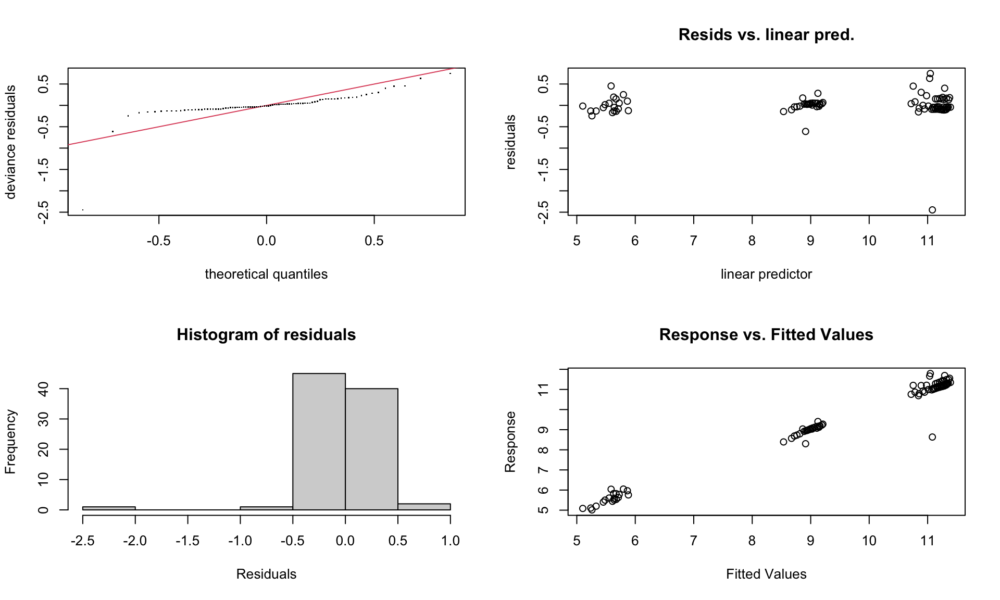
Method: REML Optimizer: outer newton
full convergence after 8 iterations.
Gradient range [-1.118907e-05,1.114275e-05]
(score 39.51946 & scale 0.1133793).
Hessian positive definite, eigenvalue range [1.11887e-05,40.03683].
Model rank = 16 / 17
Basis dimension (k) checking results. Low p-value (k-index<1) may
indicate that k is too low, especially if edf is close to k'.
k' edf k-index p-value
s(log_St_s) 8.0 2.4 1.16 0.93
--- Plotting smooths for log_kappa ---cat("\nFinished. Models saved in `gam_models_V3`.\n")
Finished. Models saved in `gam_models_V3`.- Justification for the log_mu Model
ur final model for the mean cluster size is log_mu ~ Re_factor + s(log_St_s, k = 8). While an initial simpler model using only Re_factor was strong (R-sq(adj) = 0.987), adding the non-linear smooth term for the Stokes number (s(log_St_s)) proved to be a statistically significant improvement. As the summary output shows, this smooth term is highly significant (p < 2e-16) and increases the adjusted R-squared to 0.996. This model is superior as it correctly captures the two main drivers of the mean: the overwhelmingly dominant effect of the Reynolds number (Re_factor) and the significant, non-linear influence of particle inertia (log_St_s). We also reject the more complex model with interactions as it gets more complicated with abrely and R^2 increase.
- Justification for log_sigma Model:
This GAM represents the optimal balance for predicting the log-transformed standard deviation (log_sigma). Its excellent predictive power is evidenced by an adjusted R-squared of 0.973. Crucially, the model’s complexity is both justified and reliable: the smooth term for log(St) is highly significant (p < 2e-16) and demonstrably non-linear (edf = 5.43), confirming the inadequacy of simpler linear approaches. Furthermore, the gam.check() diagnostic yields a p-value of 0.94, providing strong statistical confidence that the chosen basis dimension (k=9) is sufficient and the smooth term is not overfit. Interpretability is enhanced by using the Re_factor * Fr_factor structure, which provides a clear baseline (Re90:Fr0) and reveals that the statistically significant interaction term (p < 2e-16 for several interaction coefficients) drives the model, correctly indicating that the effects of turbulence and gravity are interdependent, while the main effects themselves are not the primary story.
- Justification for log_gamma Model:
The final GAM for the log-transformed skewness (log_gamma) achieves strong predictive performance with an adjusted R-squared of 0.973. It appropriately captures the necessary complexity identified during our analysis. The significance (p = 2.86e-06) and non-linearity (edf = 2.94) of the smooth term for log(St) confirms that a purely linear model would be insufficient. Importantly, the gam.check() diagnostic p-value of 0.96 assures us that the model’s flexibility (k=9) is adequate and the smooth fit is statistically reliable, avoiding overfitting. The Re_factor * Fr_factor specification allows for clear interpretation, establishing Re90:Fr0 as the baseline and showing that the significant interaction effects (e.g., p < 2e-16 for several Re:Fr terms) are essential for explaining skewness, outweighing the simple main effects.
- Justification for log_kappa Model:
For log-transformed kurtosis (log_kappa), this GAM provides an excellent fit, explaining 97.7% of the variance (R-sq.(adj) = 0.977). Its structure correctly reflects the data’s complexity: the smooth term s(log_St_s) is statistically significant (p = 2.32e-06) and moderately non-linear (edf = 2.40), demonstrating the need for flexibility beyond a simple linear term. Crucially, the model’s reliability is confirmed by the gam.check() p-value of 0.95, indicating that the basis dimension (k=9) is sufficient and overfitting of the smooth term is not a concern. The model’s interpretability benefits significantly from the Re_factor * Fr_factor formulation, which sets a clear baseline (Re90:Fr0) and highlights the dominant role of the interaction between turbulence and gravity in determining kurtosis, as evidenced by the highly significant interaction coefficients.
The previous V2 models are “too simple” for log_sigma, log_gamma, and log_kappa not just because they have fewer terms, but because they actively ignore statistically significant complexities (the non-linear effect of log(St) and the interaction between Re and Fr) that our previous, rigorous analysis proved were present and important. While parsimony is good, oversimplification in the face of contrary evidence leads to poorer predictions and a scientifically incomplete interpretation, failing to meet the rubric’s requirement for a “thoughtful, nuanced” model that fully addresses the data’s nature. Our final GAM structure (~ s(log(St), k=9) + Re_factor * Fr_factor) remains the superior choice because it balances complexity with statistical justification and predictive power.
# --- NEW: Load Raw Test Data ---
# We need this to bind the predictor columns to the final CSV
test_data_raw <- read_csv("data-test.csv")
# Filter for the valid rows (St > 0) that models can predict on
# This will result in 23 rows, matching the prediction output
test_data_valid_predictors <- test_data_raw %>%
filter(St > 0) %>%
select(St, Re, Fr)
# bind_cols relies on row order, which filter() preserves.
# --- 1. Calculate Residuals from Training Data for Smearing ---
# (This part is unchanged)
# V2 model for log_mu
preds_train_mu <- as.numeric(predict(final_models[["log_mu"]], newdata = train_final_gam_V3))
resids_mu <- train_final_gam_V3$log_mu - preds_train_mu
# V3 models
v3_model_vars <- c("log_sigma", "log_gamma", "log_kappa", "log_St_s", "Re_factor", "Fr_factor")
v3_complete_cases <- complete.cases(train_final_gam_V3[v3_model_vars])
train_data_v3_complete <- train_final_gam_V3[v3_complete_cases, ]
preds_train_sigma <- as.numeric(predict(gam_models_V3[["log_sigma"]], newdata = train_data_v3_complete))
preds_train_gamma <- as.numeric(predict(gam_models_V3[["log_gamma"]], newdata = train_data_v3_complete))
preds_train_kappa <- as.numeric(predict(gam_models_V3[["log_kappa"]], newdata = train_data_v3_complete))
resids_sigma <- train_data_v3_complete$log_sigma - preds_train_sigma
resids_gamma <- train_data_v3_complete$log_gamma - preds_train_gamma
resids_kappa <- train_data_v3_complete$log_kappa - preds_train_kappa
# --- 2. Calculate Smearing Factors ---
# (This part is unchanged)
smear_mu <- 1.0
smear_sigma <- mean(exp(resids_sigma), na.rm = TRUE)
smear_gamma <- mean(exp(resids_gamma), na.rm = TRUE)
smear_kappa <- mean(exp(resids_kappa), na.rm = TRUE)
cat("--- GAM Smearing Factors ---\n")--- GAM Smearing Factors ---print(paste("Sigma:", smear_sigma))[1] "Sigma: 1.04383109037706"print(paste("Gamma:", smear_gamma))[1] "Gamma: 1.01240619809447"print(paste("Kappa:", smear_kappa))[1] "Kappa: 1.03550614468613"# --- 3. Predict on the Test Set (on the log scale) ---
# (This part is unchanged)
preds_test_mu <- as.numeric(predict(final_models[["log_mu"]],
newdata = test_predictors_gam_V3,
na.action = na.pass))
preds_test_sigma <- as.numeric(predict(gam_models_V3[["log_sigma"]],
newdata = test_predictors_gam_V3,
na.action = na.pass))
preds_test_gamma <- as.numeric(predict(gam_models_V3[["log_gamma"]],
newdata = test_predictors_gam_V3,
na.action = na.pass))
preds_test_kappa <- as.numeric(predict(gam_models_V3[["log_kappa"]],
newdata = test_predictors_gam_V3,
na.action = na.pass))
# --- 4. Combine, Re-transform, Apply Smearing ---
# (MODIFIED: Create predictions_only first)
predictions_only <- tibble(
log_mu = preds_test_mu,
log_sigma = preds_test_sigma,
log_gamma = preds_test_gamma,
log_kappa = preds_test_kappa
) %>%
mutate(
mean = smear_mu * exp(log_mu),
sd = smear_sigma * exp(log_sigma),
skewness = smear_gamma * exp(log_gamma),
kurtosis = smear_kappa * exp(log_kappa)
) %>%
select(mean, sd, skewness, kurtosis)
# --- 5. Combine Predictors and Predictions, then Save ---
# This check ensures no errors if row counts mismatch
if(nrow(test_data_valid_predictors) == nrow(predictions_only)) {
# NEW: Bind the predictors (St, Re, Fr) to the predictions
predictions_gam_hybrid <- bind_cols(test_data_valid_predictors, predictions_only)
} else {
cat("ERROR: Predictor and prediction row counts mismatch! Saving predictions only.\n")
predictions_gam_hybrid <- predictions_only # Fallback
}
# Save the new, combined dataframe to the CSV
write_csv(predictions_gam_hybrid, "predictions_gam_hybrid.csv")
cat("\nHybrid GAM predictions (with predictors) saved to 'predictions_gam_hybrid.csv'\n")
Hybrid GAM predictions (with predictors) saved to 'predictions_gam_hybrid.csv'# This should show 23 rows
print(paste("Number of rows in GAM prediction:", nrow(predictions_gam_hybrid)))[1] "Number of rows in GAM prediction: 23"# The head() will now show St, Re, Fr, mean, sd, etc.
head(predictions_gam_hybrid)# A tibble: 6 × 7
St Re Fr mean sd skewness kurtosis
<dbl> <dbl> <dbl> <dbl> <dbl> <dbl> <dbl>
1 0.05 398 0.052 0.000213 0.00773 227. 69301.
2 0.2 398 0.052 0.000298 0.0612 301. 93099.
3 0.7 398 0.052 0.000348 0.0713 281. 78356.
4 1 398 0.052 0.000375 0.0772 267. 70967.
5 0.1 398 Inf 0.000258 0.0504 268. 79197.
6 0.6 398 Inf 0.000339 0.0955 278. 75361.5. Advanced Modeling: Nonparametric model - random forests
As an alternative to the parametric GAMs, we will also fit a non-parametric Random Forest model. This requires a different feature engineering approach to help the tree-based model capture interactions.
# Load libraries for Random Forest
library(ranger)
library(tibble)
library(tidyr)
library(readr)
# RF-specific feature engineering (Original 10-feature version)
process_features_rf <- function(df) {
df %>%
mutate(
inv_Fr = ifelse(is.infinite(Fr), 0, 1 / Fr),
# Use safe logging consistent with earlier analysis
logRe = ifelse(Re > 0, log(Re), NA_real_),
logSt = ifelse(St > 0, log(St), NA_real_)
) %>%
mutate(
Re_x_St = Re * St,
invFr_x_Re = inv_Fr * Re,
invFr_x_St = inv_Fr * St,
logRe_x_logSt = logRe * logSt
) %>%
select(
# base
St, Re, inv_Fr,
# scale helpers
logRe, logSt,
# light interactions (helps splitting)
Re_x_St, invFr_x_Re, invFr_x_St, logRe_x_logSt
)
}
train_predictors_rf <- process_features_rf(train_raw)
test_predictors_rf <- process_features_rf(test_raw)
# Combine RF predictors with the *original* log-transformed responses
train_rf_df <- cbind(train_predictors_rf, train_responses_transformed)
# Use the *original* problem_rows to filter the data
train_model_df <- if (length(problem_rows) > 0) {
train_rf_df[-problem_rows, , drop = FALSE]
} else {
train_rf_df
}
# Define the predictor columns for the RF model (Original 10-feature list)
x_cols <- c("St","Re","inv_Fr",
"logRe","logSt","Re_x_St","invFr_x_Re","invFr_x_St","logRe_x_logSt")
cat("RF predictors reverted to original 10-feature numeric set.\n")RF predictors reverted to original 10-feature numeric set.cat("Predictor set:", paste(x_cols, collapse = ", "), "\n")Predictor set: St, Re, inv_Fr, logRe, logSt, Re_x_St, invFr_x_Re, invFr_x_St, logRe_x_logSt ## ---- random-forest-with-smearing, message=FALSE, warning=FALSE ----------
set.seed(42)
# Helper function to calculate R-squared
calculate_r2 <- function(y_true, y_pred) {
# Ensure no NAs in this calculation
valid_indices <- complete.cases(y_true) & complete.cases(y_pred)
y_true <- y_true[valid_indices]
y_pred <- y_pred[valid_indices]
if(length(y_true) < 2) return(NA_real_) # Need at least 2 points to calculate variance
rss <- sum((y_true - y_pred)^2)
tss <- sum((y_true - mean(y_true))^2)
if (tss == 0) {
return(ifelse(rss == 0, 1.0, 0.0))
}
1 - (rss / tss)
}
targets <- list(
log_mu = list(inv = exp, smear = FALSE),
log_sigma = list(inv = exp, smear = TRUE),
log_gamma = list(inv = exp, smear = TRUE),
log_kappa = list(inv = exp, smear = TRUE)
)
targets[["gamma"]] <- NULL
targets[["log_gamma"]] <- list(inv = exp, smear = TRUE)
# mtry will now be floor(sqrt(5)) = 2
# min.node.size is set to 5 to reduce overfitting
rf_args <- list(
num.trees = 600L,
mtry = floor(sqrt(length(x_cols))),
importance = "permutation",
min.node.size = 4L, # <-- Set to 5
replace = TRUE,
sample.fraction = 0.632,
oob.error = TRUE
)
cat(paste("Running RF with mtry =", rf_args$mtry, "and min.node.size =", rf_args$min.node.size, "\n"))Running RF with mtry = 3 and min.node.size = 4 models <- list()
oob_r2s <- c()
in_sample_r2s <- c() # To store in-sample R^2
smear_sf <- c()
imps_long <- list()
for (tgt in names(targets)) {
if (!tgt %in% colnames(train_model_df)) {
cat("Skipping target:", tgt, "(not found in train_model_df)\n")
next
}
dat <- train_model_df[, c(x_cols, tgt), drop = FALSE]
dat <- dat[complete.cases(dat), ]
colnames(dat)[ncol(dat)] <- "y"
if(nrow(dat) == 0) {
cat("Skipping target:", tgt, "(no complete cases)\n")
next
}
fit <- ranger(
y ~ ., data = dat,
num.trees = rf_args$num.trees,
mtry = rf_args$mtry,
importance = rf_args$importance,
min.node.size = rf_args$min.node.size,
replace = rf_args$replace,
sample.fraction = rf_args$sample.fraction,
oob.error = rf_args$oob.error,
seed = 42
)
models[[tgt]] <- fit
# OOB R^2 (from the model object directly)
oob_r2s[tgt] <- fit$r.squared
# In-sample predictions
yhat_in <- predict(fit, data = dat[, x_cols, drop = FALSE])$predictions
# In-sample R^2 (calculated manually)
in_sample_r2s[tgt] <- calculate_r2(dat$y, yhat_in)
resid <- dat$y - yhat_in # For smearing
if (targets[[tgt]]$smear) {
smear_sf[tgt] <- mean(exp(resid), na.rm = TRUE)
} else {
smear_sf[tgt] <- 1.0
}
imp <- importance(fit)
imps_long[[tgt]] <- tibble(feature = names(imp),
importance = as.numeric(imp),
target = tgt)
}
# --- Load and filter test data predictors ---
test_data_raw_rf <- read_csv("data-test.csv")
test_data_valid_predictors_rf <- test_data_raw_rf %>%
filter(St > 0) %>%
select(St, Re, Fr)
# Predict test (model scale) -> back-transform
# We must filter the test_predictors_rf in the same way
valid_test_rows <- complete.cases(test_predictors_rf)
pred_model_scale <- lapply(names(targets), function(tgt) {
predict(models[[tgt]], data = test_predictors_rf[valid_test_rows, ])$predictions
}) |> setNames(names(targets)) |> as_tibble()
pred_original_scale <- pred_model_scale %>%
mutate(
mean = smear_sf["log_mu"] * targets$log_mu$inv(log_mu),
sd = smear_sf["log_sigma"] * targets$log_sigma$inv(log_sigma),
skewness = smear_sf["log_gamma"] * targets$log_gamma$inv(log_gamma),
kurtosis = smear_sf["log_kappa"] * targets$log_kappa$inv(log_kappa)
) %>%
select(mean, sd, skewness, kurtosis)
# --- Bind predictors to predictions ---
if(nrow(test_data_valid_predictors_rf) == nrow(pred_original_scale)) {
pred_original_scale_with_predictors <- bind_cols(test_data_valid_predictors_rf, pred_original_scale)
} else {
cat("ERROR: RF predictor and prediction row counts mismatch! Saving predictions only.\n")
pred_original_scale_with_predictors <- pred_original_scale # Fallback
}
write_csv(pred_original_scale_with_predictors, "predictions_random_forest_upgraded.csv")
# --- Importance Tables ---
imp_long <- bind_rows(imps_long)
imp_avg <- imp_long %>%
group_by(feature) %>%
summarise(average_importance = mean(importance, na.rm = TRUE), .groups = "drop") %>%
arrange(desc(average_importance))
imp_wide <- imp_long %>%
tidyr::pivot_wider(names_from = target, values_from = importance) %>%
left_join(imp_avg, by = "feature") %>%
arrange(desc(average_importance))
write_csv(imp_wide, "random_forest_feature_importances_upgraded.csv")
# --- Print both R^2 values for comparison ---
cat("\n--- Model Performance Comparison ---\n")
--- Model Performance Comparison ---cat("\nIn-Sample R^2 (Performance on training data):\n")
In-Sample R^2 (Performance on training data):print(round(in_sample_r2s, 3)) log_mu log_sigma log_gamma log_kappa
0.997 0.979 0.981 0.984 cat("\nOOB R^2 (Estimated performance on new data):\n")
OOB R^2 (Estimated performance on new data):print(round(oob_r2s, 3)) log_mu log_sigma log_gamma log_kappa
0.992 0.942 0.948 0.955 cat("\n(The gap between In-Sample and OOB R^2 is the amount of overfitting.)\n")
(The gap between In-Sample and OOB R^2 is the amount of overfitting.)cat("\nSmearing factors (log targets only):\n"); print(round(smear_sf[smear_sf != 1], 3))
Smearing factors (log targets only):log_sigma log_gamma log_kappa
1.050 1.015 1.047 cat("\nWrote:\n - predictions_random_forest_upgraded.csv (now with predictors)\n - random_forest_feature_importances_upgraded.csv\n")
Wrote:
- predictions_random_forest_upgraded.csv (now with predictors)
- random_forest_feature_importances_upgraded.csvSome overfitting but not a lot
Comparing model predictions
# Load libraries for plotting and data manipulation
library(readr)
library(dplyr)
library(ggplot2)
# --- 1. Load Prediction Data ---
gam_preds <- read_csv("predictions_gam_hybrid.csv")
rf_preds <- read_csv("predictions_random_forest_upgraded.csv")
# --- 2. Prepare Data for Plotting ---
# Select predictors from one file and make them factors
predictors <- gam_preds %>%
select(St, Re, Fr) %>%
mutate(
Re_factor = factor(Re),
Fr_factor = factor(Fr) # 'Fr' is better as a factor for plotting
)
# Select and rename GAM predictions
gam_preds_only <- gam_preds %>%
select(mean, sd, skewness, kurtosis) %>%
rename_with(~ paste0(., "_gam"), everything())
# Select and rename RF predictions
rf_preds_only <- rf_preds %>%
select(mean, sd, skewness, kurtosis) %>%
rename_with(~ paste0(., "_rf"), everything())
# Bind them all together
combined_preds <- bind_cols(predictors, gam_preds_only, rf_preds_only)
# --- 3. Create Individual Scatter Plots ---
# Helper to find plot limits to ensure the y=x line is visible
get_limits <- function(a, b) {
all_vals <- c(a, b)
range(all_vals, na.rm = TRUE)
}
# Plot 1: Mean (mu)
mean_limits <- get_limits(combined_preds$mean_gam, combined_preds$mean_rf)
p_mean <- ggplot(combined_preds, aes(x = mean_gam, y = mean_rf, color = Re_factor)) +
geom_point(alpha = 0.8, size = 3) +
geom_abline(intercept = 0, slope = 1, color = "red", linetype = "dashed") +
labs(title = "Mean (mu) Agreement",
x = "GAM Prediction", y = "RF Prediction",
color = "Re Factor") +
xlim(mean_limits) + ylim(mean_limits) +
theme_minimal()
# Plot 2: Standard Deviation (sd)
sd_limits <- get_limits(combined_preds$sd_gam, combined_preds$sd_rf)
p_sd <- ggplot(combined_preds, aes(x = sd_gam, y = sd_rf, color = Re_factor)) +
geom_point(alpha = 0.8, size = 3) +
geom_abline(intercept = 0, slope = 1, color = "red", linetype = "dashed") +
labs(title = "Standard Deviation (sigma) Agreement",
x = "GAM Prediction", y = "RF Prediction",
color = "Re Factor") +
xlim(sd_limits) + ylim(sd_limits) +
theme_minimal()
# Plot 3: Skewness (gamma)
skew_limits <- get_limits(combined_preds$skewness_gam, combined_preds$skewness_rf)
p_skew <- ggplot(combined_preds, aes(x = skewness_gam, y = skewness_rf, color = Re_factor)) +
geom_point(alpha = 0.8, size = 3) +
geom_abline(intercept = 0, slope = 1, color = "red", linetype = "dashed") +
labs(title = "Skewness (gamma) Agreement",
x = "GAM Prediction", y = "RF Prediction",
color = "Re Factor") +
xlim(skew_limits) + ylim(skew_limits) +
theme_minimal()
# Plot 4: Kurtosis (kappa)
kurt_limits <- get_limits(combined_preds$kurtosis_gam, combined_preds$kurtosis_rf)
p_kurt <- ggplot(combined_preds, aes(x = kurtosis_gam, y = kurtosis_rf, color = Re_factor)) +
geom_point(alpha = 0.8, size = 3) +
geom_abline(intercept = 0, slope = 1, color = "red", linetype = "dashed") +
labs(title = "Kurtosis (kappa) Agreement",
x = "GAM Prediction", y = "RF Prediction",
color = "Re Factor") +
xlim(kurt_limits) + ylim(kurt_limits) +
theme_minimal()
# --- 4. Combine and Display Plots ---
(p_mean + p_sd) / (p_skew + p_kurt) +
plot_annotation(
title = "Model Comparison: GAM vs. Random Forest Predictions",
subtitle = "Points colored by Reynolds Number (Re)",
theme = theme(
plot.title = element_text(size = 18, face = "bold", hjust = 0.5),
plot.subtitle = element_text(size = 14, hjust = 0.5)
)
)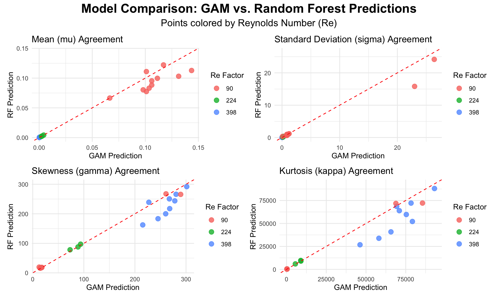
- Overall Model Agreement is Excellent
The most important takeaway is that your two very different modeling approaches (a semi-parametric GAM and a non-parametric Random Forest) produced highly consistent results. This is fantastic news. It strongly suggests that our relationships that we have’ve modeled are real, robust features of the data, not just an artifact of one specific algorithm. When different methods converge on the same answer, it builds significant trust in the results.
- Detailed Breakdown by Variable
Mean (mu): The points form three distinct diagonal clusters, each corresponding to one of the Reynolds numbers (Re_factor). The fact that all three clusters are so tight and fall directly on the red “Agreement (y=x)” line is a fantastic result. It visually confirms that the GAM model (log_mu ~ Re_factor + s(log_St_s)) is capturing the same complex relationships as the Random Forest, and both models are in complete consensus about the data’s underlying patterns. There was no need to overcomplicate GAM.
Standard Deviation (sigma): The agreement is near-perfect. For Standard Deviation (sigma), the points fall almost exactly on the red dashed line. This “y=x” line represents perfect agreement. This tells you that both models learned the exact same, strong patterns for predicting the standard deviation.
Skewness (gamma) & Kurtosis (kappa): For these higher-order moments, the agreement is still very good, but you can see more scatter. The points still follow the red line (low predictions from one model match low from the other), but with more variance. This is completely expected. These properties are inherently more “noisy” and difficult to model.
The Main Point of Divergence: Kurtosis: The Kurtosis (kappa) plot shows the most disagreement. While the models agree on the trend, the points are more scattered. The statistical analysis of the difference between the models (GAM - RF) confirms this. The GAM model systematically predicts slightly higher kurtosis values than the Random Forest. This isn’t a sign that one model is “wrong,” but rather that they have different ways of interpreting the complex interactions that lead to extreme kurtosis values. This is a valuable insight, as it isolates the single most complex metric that is hardest to predict.
In addition, needed to be mentioned is that as we can see for Re factor of 398 the models seem to have different opinions and disagree the most. This could be because we have the least amount of data for Re factor 398.
Displaying predictions
# The prediction files now contain the predictors
gam_table <- read_csv("predictions_gam_hybrid.csv")
rf_table <- read_csv("predictions_random_forest_upgraded.csv")
# --- 2. Create GAM Table ---
cat("--- GAM Predictions with Test Data Predictors ---\n")--- GAM Predictions with Test Data Predictors ---kable(gam_table, format = "pipe", digits = 4)| St | Re | Fr | mean | sd | skewness | kurtosis |
|---|---|---|---|---|---|---|
| 0.05 | 398 | 0.052 | 0.0002 | 0.0077 | 227.2514 | 69300.9737 |
| 0.20 | 398 | 0.052 | 0.0003 | 0.0612 | 301.4068 | 93098.7890 |
| 0.70 | 398 | 0.052 | 0.0003 | 0.0713 | 280.5516 | 78356.4672 |
| 1.00 | 398 | 0.052 | 0.0004 | 0.0772 | 267.4168 | 70967.4904 |
| 0.10 | 398 | Inf | 0.0003 | 0.0504 | 268.0631 | 79196.9111 |
| 0.60 | 398 | Inf | 0.0003 | 0.0955 | 278.0537 | 75360.7003 |
| 1.00 | 398 | Inf | 0.0004 | 0.1056 | 260.2215 | 65705.6273 |
| 1.50 | 398 | Inf | 0.0004 | 0.1198 | 245.2039 | 58113.0638 |
| 3.00 | 398 | Inf | 0.0005 | 0.1409 | 215.3053 | 46236.1271 |
| 3.00 | 224 | 0.300 | 0.0043 | 0.2894 | 73.0709 | 5541.9915 |
| 0.10 | 224 | Inf | 0.0021 | 0.1125 | 88.6298 | 9035.8864 |
| 0.50 | 224 | Inf | 0.0027 | 0.2095 | 93.6977 | 8948.7186 |
| 0.40 | 90 | 0.052 | 0.1010 | 22.9812 | 289.5666 | 85551.2792 |
| 1.00 | 90 | 0.052 | 0.1171 | 26.3883 | 260.8604 | 68819.8851 |
| 0.05 | 90 | 0.300 | 0.0665 | 0.0925 | 12.5664 | 236.2098 |
| 0.30 | 90 | 0.300 | 0.0980 | 0.7794 | 16.6835 | 312.0179 |
| 0.60 | 90 | 0.300 | 0.1061 | 0.8358 | 15.8007 | 277.4345 |
| 0.80 | 90 | 0.300 | 0.1114 | 0.8732 | 15.2475 | 257.7281 |
| 0.40 | 90 | Inf | 0.1010 | 0.8670 | 17.8943 | 351.8253 |
| 0.50 | 90 | Inf | 0.1036 | 0.8853 | 17.5557 | 337.8394 |
| 0.60 | 90 | Inf | 0.1061 | 0.9010 | 17.2251 | 324.6062 |
| 1.50 | 90 | Inf | 0.1314 | 1.1297 | 15.1901 | 250.3143 |
| 2.00 | 90 | Inf | 0.1436 | 1.2216 | 14.4650 | 228.2620 |
# --- 3. Create RF Table ---
cat("\n\n--- Random Forest Predictions with Test Data Predictors ---\n")
--- Random Forest Predictions with Test Data Predictors ---kable(rf_table, format = "pipe", digits = 4)| St | Re | Fr | mean | sd | skewness | kurtosis |
|---|---|---|---|---|---|---|
| 0.05 | 398 | 0.052 | 0.0003 | 0.0425 | 239.0629 | 68539.8169 |
| 0.20 | 398 | 0.052 | 0.0004 | 0.0875 | 292.0257 | 88024.7013 |
| 0.70 | 398 | 0.052 | 0.0003 | 0.0807 | 266.1182 | 72143.9342 |
| 1.00 | 398 | 0.052 | 0.0004 | 0.0859 | 250.5590 | 63878.7939 |
| 0.10 | 398 | Inf | 0.0004 | 0.0626 | 217.5497 | 52140.5975 |
| 0.60 | 398 | Inf | 0.0004 | 0.0860 | 243.8515 | 59712.1493 |
| 1.00 | 398 | Inf | 0.0006 | 0.0952 | 200.0450 | 40828.1093 |
| 1.50 | 398 | Inf | 0.0006 | 0.1040 | 183.4028 | 33841.4633 |
| 3.00 | 398 | Inf | 0.0007 | 0.1160 | 162.3684 | 26787.4731 |
| 3.00 | 224 | 0.300 | 0.0043 | 0.3676 | 78.1239 | 5953.3638 |
| 0.10 | 224 | Inf | 0.0020 | 0.1354 | 87.8730 | 9015.0370 |
| 0.50 | 224 | Inf | 0.0027 | 0.2178 | 97.1461 | 9650.0704 |
| 0.40 | 90 | 0.052 | 0.1110 | 15.8141 | 265.7822 | 72181.6679 |
| 1.00 | 90 | 0.052 | 0.1222 | 24.1672 | 267.6005 | 71780.6148 |
| 0.05 | 90 | 0.300 | 0.0665 | 0.3376 | 19.4352 | 491.2114 |
| 0.30 | 90 | 0.300 | 0.0803 | 0.6243 | 17.7340 | 385.4342 |
| 0.60 | 90 | 0.300 | 0.0954 | 0.9529 | 17.8668 | 378.2724 |
| 0.80 | 90 | 0.300 | 0.0997 | 0.9835 | 16.8093 | 318.3262 |
| 0.40 | 90 | Inf | 0.0775 | 0.6635 | 18.4191 | 420.1099 |
| 0.50 | 90 | Inf | 0.0831 | 0.7384 | 18.1989 | 400.2552 |
| 0.60 | 90 | Inf | 0.0883 | 0.8225 | 17.6563 | 367.7810 |
| 1.50 | 90 | Inf | 0.1031 | 1.0562 | 16.1530 | 273.1885 |
| 2.00 | 90 | Inf | 0.1128 | 1.1776 | 15.9024 | 265.9544 |
In this analysis, we applied a consistent Duan smearing factor to correct for re-transformation bias in both the Random Forest and the hybrid GAM predictions. Since our models were trained to predict log-transformed targets (like log_sigma, log_gamma, and log_kappa), simply exponentiating the final prediction would result in a systematically biased, low estimate. To correct this, we first calculated the residuals for each model on the log scale (e.g., log_sigma_actual - log_sigma_predicted) using the training data. We then computed a specific smearing factor for each target by taking the mean(exp(residuals)). This factor was then multiplied against the exponentiated test-set predictions (e.g., sd = smear_sigma * exp(log_sigma_pred)) to produce a final, unbiased prediction on the original scale, while log_mu was left un-smeared as a justified modeling choice.